| ハイキュー!! ショーセツバン!! VII 決戦の秋 | |
| 古舘春一 & 星希代子 | |
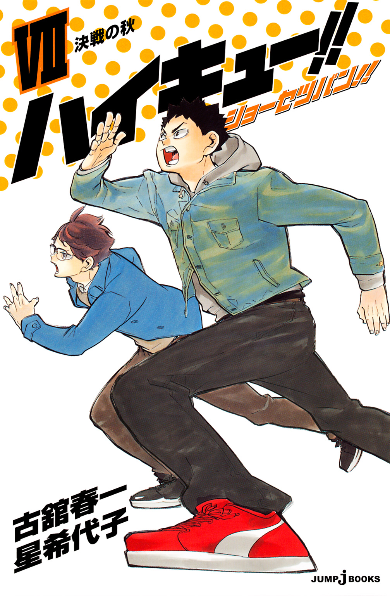
この本は縦書きでレイアウトされています。
また、ご覧になる機種により、表示の差が認められることがあります。
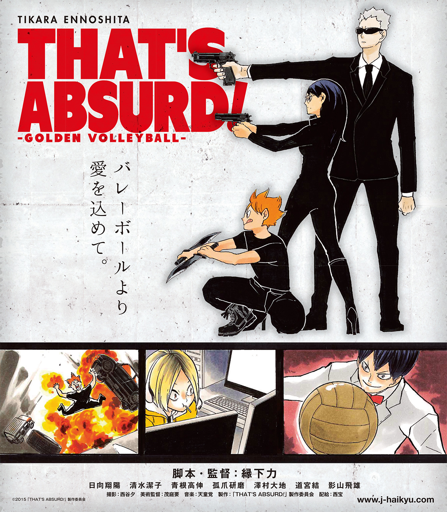
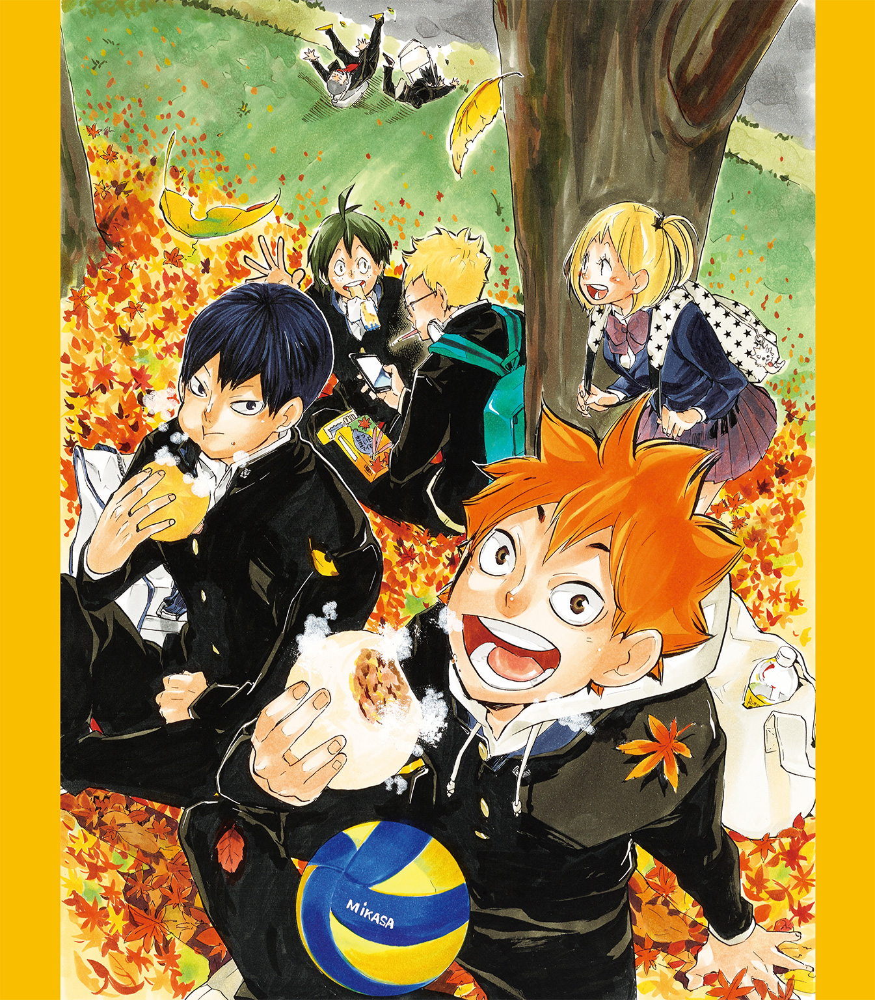
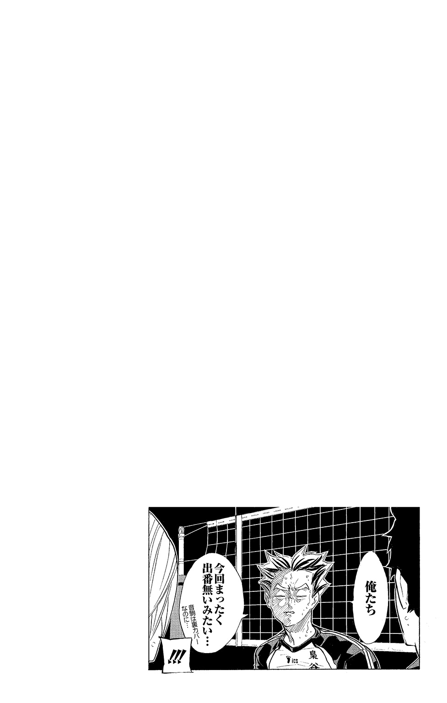
この作品はフィクションです。
実在の人物・団体・事件などにはいっさい関係ありません。
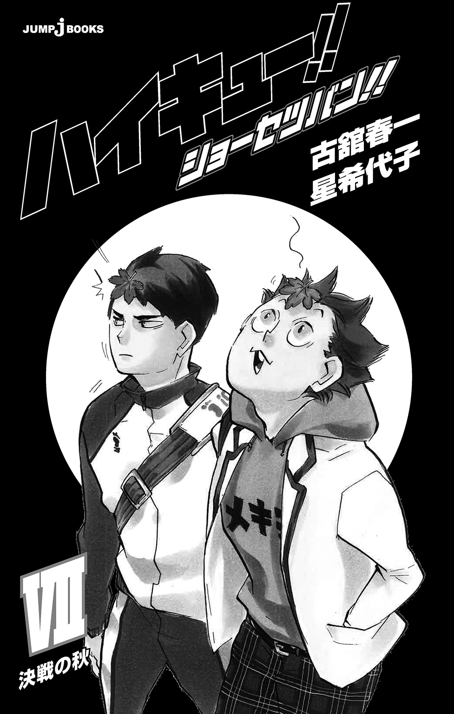
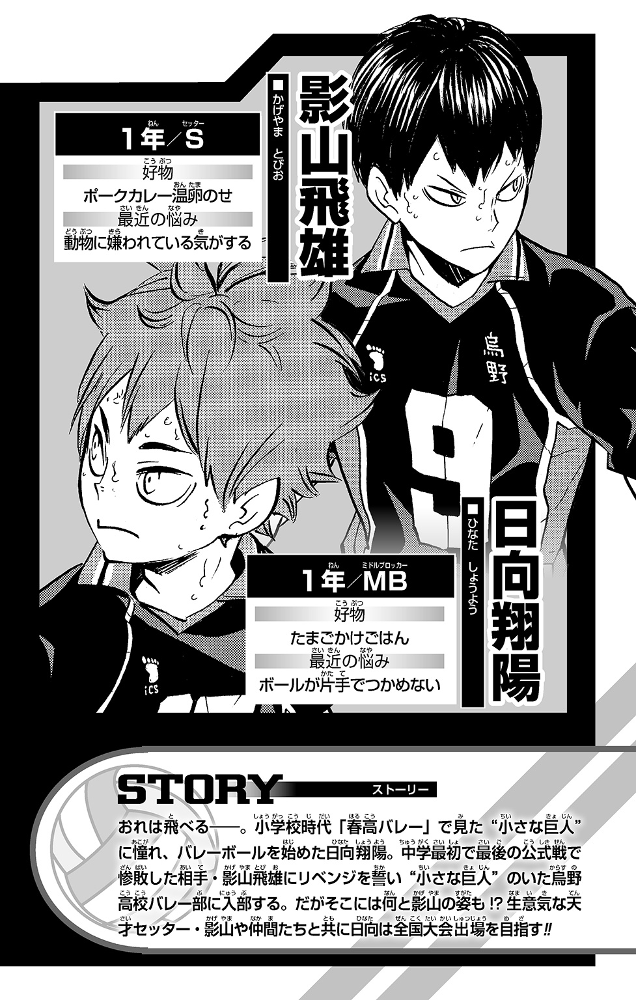
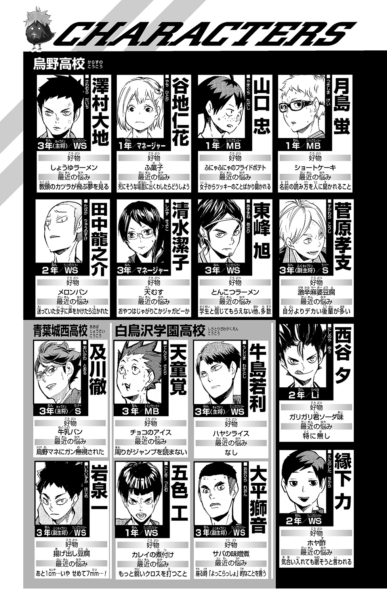
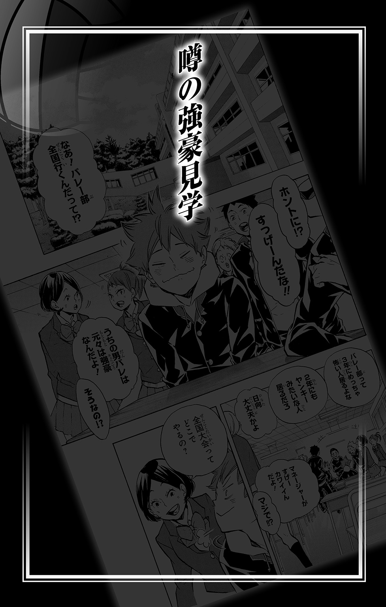
澤村は不安だった。
体育館へ向かう渡り廊下には乾いた風が吹き、見あげれば校舎や木々のあいまに雲ひとつない秋晴れの空もうかがえる。なんとも過ごしやすい秋の午後だ。
月末――10月25日からは春高の代表決定戦が行われる。
『落ちた強豪、飛べない烏』と揶揄され、日の当たらない場所で足踏みを続けていたような二年間を経て、やっと手に入れた切符だ。チームの結束もこれまでになく高まっており、毎日の練習、そのひとつひとつに確かな手応えが感じられる充実した日々だった。
しかし今日に限っては、不安しか感じられない。
日差しはやさしく、頰を撫でる風も心地よいが、体育館へ向かう足はどんどん重くなる。毎日着ている制服がなぜか窮屈に感じられて、ぐっと袖を引っ張ったりしてみたが、きっと気のせいなのだろう。
膨らんでいく不安の種は、今日、この後行われる進路相談だった。いや、進路相談そのものに不安はない。希望する進路はほぼ固まっているし、部活のために学業をおろそかにしたということもない。とくに問題はなくスムーズに終わるだろう。
心配なのは、進路相談のために３年生全員が部活に遅れるということだった。ふだんの練習なら、ここまで気を揉むことはない。
しかし、今日は特別な日だった。
「なんでこんな日に......」
だが、嘆いていてもしかたがない。せめて一声かけてから行くためにここまでやってきたのだ。澤村は覚悟を決めて第二体育館へ入ると、それぞれ練習をしたり遊んだりと、部活前のひとときをワチャワチャ楽しんでいる後輩たちに声をかけた。
「ちょっと、いいか！」
その声に含まれた多少の緊張を嗅ぎとったのか、部員たちは即座に手と口を止めて主将のもとへ集まってきた。体育館の中で、澤村だけ制服を着ているというのも緊張を呼ぶのかもしれない。騒がしかった体育館はしんと静まり返り、日向や田中など、なにもやましいことをしていないのに「怒られるのかな？」という顔をしている。
固くなる部員たちを前に、澤村はゆっくりときりだした。
「あー、朝にも言ったと思うけど、今日これから進路相談があるんだわ。３年はちょっと遅れるから、２年中心にしっかり頼むな」
「「ウス！」」
なんだ、そんなことか。わかってますって。という空気が１、２年生の間に流れて、ようやく彼らの表情がゆるむ。
後輩たちの返事に頷くと、澤村はここからが本題とばかりに重々しく続けた。
「で、中学生の部活見学の件なんだが......」
部活見学。
澤村を不安にさせているのは、このイレギュラーなイベントだった。
これは、近隣中学校の３年生が志望校の見学にやってくるというものらしいが、授業風景や学校施設の見学に加えて、なんと『部活見学』の時間もあるというのだ。
顧問の武田に職員室へ呼ばれ、バレー部の様子を見てもらってもかまわないかと訊かれたのは先週のことだった――。

「烏野へ見学に来る中学生のうち数名が、バレー部の様子も見てみたいということなんですよ」
「はぁ」
「そんな大人数じゃないんです。どうやら、四、五人らしいんですが、中学でバレーをやってる子も来るらしくて」
練習を見てもらうのはかまわない。こうして気にしてもらえるなんて、ありがたいくらいだった。
自分もかつて春高の試合を見て烏野を志望し、しかし入学してから監督が変わっていたことを知って驚いた経緯もある。自分の目で確かめたいという気持ちはよくわかった。どんな先輩がいるか、練習メニューはどうなっているのかも気になるのだろう。澤村は快く承諾しようとした。
「僕たちはかまいませ......」
返事をしかけた瞬間、部員たちの顔――主に日向、田中、西谷たちの顔が脳裏にフラッシュバックした。
「.........！」
澤村が不安を覚えたのはこのときだった。
「どうしました？ ちょっと顔色が悪いようですけど......」
「いえ、大丈夫です。......いや、ちょっと待ってください」
はしゃぐ。あいつらははしゃぐ。中学生が自分たちを見にやってくるとか、あいつら絶対に浮ついてはしゃいで練習にならないに決まってる。こういうときのあいつらのテンションは、俺の手にあまるぞ。
ソワソワソワソワ、ドキドキドキドキと興奮している日向たちの顔をなんとか振り払うと、澤村は申し訳なさそうに断ったのだった。
「すみません、やっぱりもうすぐ代表決定戦も近いので......」
見学したい気持ちはわかる。だが、あいつらをまとめる俺の気持ちもわかってくれ！ と、中学生たちに頭を下げてまわりたいような気持ちだった。
そんな断腸の思いを知るよしもなく、武田はあっさりと承知する。
「そうですか。いえ、強豪校の練習風景を見てみたいと言われましてね。そう言われると、僕もうれしくて、ハハ。大切な試合前に、君たちの集中の妨げになっちゃいけませんよね。今から断りの返事をいれますから......」
恥ずかしそうに首をすくめる武田の言葉に、澤村の目が光った。
「......強豪校？」
その小さな呟きに気づき、受話器へ手を伸ばしていた武田が顔をあげる。
「ええ、県の強豪に返り咲いた烏野の練習を見てみたいと。先方も上手ですよね、僕もつい......」
そこまで聞くと、澤村はにこやかに応えていた。
「わかりました。部活見学、よろこんで引き受けます」
つい武田と握手までして引き受けた部活見学だったが、まさか、ちょうど３年が全員不在となるときに行われるとはチェックが甘かった。
抜かった、俺まで浮かれてしまった。まだまだだ、主将としてまだまだだ。あいつらのことを笑えないな......。
自責の念に押しつぶされそうになりながら、澤村は部員たちに向かって釘を刺し続けた。
「いいか、中学生が来てもふだんどおりにな。格好つけようとか、いいところを見せようとか思ってよけいなことするんじゃないぞ。試合も近いんだ、ふざけず、浮かれず、ちゃんと練習するんだぞ、いいな？ あと、なんか言っておくことは......」
まるで初めて子どもを使いにやる親のように、必死に言い聞かせる。
「あ、そうだ......田中」
「ハイ！」
主将に名指しされて、田中が一歩前に出る。
「わかってると思うが......お前、中学生、威嚇するなよ」
一番心配なのはこれだった。田中のせいでバレー部のみならず学校自体に悪い噂が立ってはたまらない。
澤村の真剣な顔に、なにを言い渡されるのかと緊張していた田中がホッと破顔した。
「そんなことしないっすよ！ 今日はドーンと大船に乗ったつもりで俺に任せといてくださいよ、大地さん！」
白い歯を見せて笑う田中の隣で、縁下が呟く。
「泥舟の間違いだろ」
「え？ なんか言ったか？ とにかく、俺が、こいつらも中坊もビシッとまとめときますから安心してください！」
親の心、子知らず。
本当にドンと胸を叩いた田中の笑顔に、澤村はキュッと胃の痛むのを感じた。
「なあ影山！ なあってば！」
肩を落とした主将が体育館を出ていくと、日向はもう待ちきれないといった様子で隣の影山へ声をかけた。
「なんだ」
「お前さ、今日、どこ中が来るか聞いてる？」
「知らん。さっさと練習するぞ」
影山は部活見学にはまるで興味がないらしく、さっさとボールを手にして歩きだす。爛々と目を輝かせて、今にもピョコピョコ飛び跳ねそうな日向とは対照的だ。
「待てってば！」
影山の背中を追い、日向はワクワク、ワクワクと音まで聞こえてきそうな顔で続ける。
「見学とか楽しみだよなー。おれたちが要チェックの強豪！ ってことだろ？ あ、そうだ、おれの後輩も来るといいのになー！ 中学のときに比べたら、おれもけっこううまくなってるからな！」
「......うまくなった、だと？」
影山がやっと振り返る。その目は冷たいを通り越し、怒りのあまりに燃えていた。後ろでえっへんと胸を張っていた日向がたじろぐ。
「な......なんだね、その顔は、影山クン」
「うまくないだろうが、このボゲ！ 偉そうなことは、ちゃんとサーブを入れられるようになってから言え！ サーブだけじゃなくて、レシーブだってお前が狙われて......」
「う、うるさいなー、わかってるし!!」
耳の痛い小言を遮ると、日向はちぇーっとふくれて逃げるようにコートへ走っていった。そして「クッソー！」と懸念のサーブ練習を始めるのだった。
最初はいつ見学者が来るかと気もそぞろだったが、持ち前のひたむきさからか、ただ忘れっぽいのか、部員たちはいつしか練習に集中しはじめた。その姿を澤村が見ていたら、安堵に涙したかもしれない。２年生を中心にいつもと変わらぬ練習を行っていると、体育館の入り口から元気な声が響いたのだった。
「失礼します！」
初々しい挨拶に続いて、開いた扉からひょこひょこと見慣れない顔が現れる。揃いのブレザー服をきた男子たちとスーツの男性。ついに部活見学の中学生がやってきたのだ。
「あっ、来ましたー！」
日向がぶんぶんと両手を振って知らせると、他の部員たちも手を止めて振り向く。
「おっ、けっこう来たじゃねーか。やっと世間が俺たちに気づいたようだな！」
「なんか道場破りみたいだな、負けらんねえ......」
田中と西谷が好奇心丸出しの目でジロジロジロジロと中学生の観察を始め、どっちが見学者なのだかわからない。
そして意外なことに、他人のことになどまったく興味のなさそうな月島も、壁際に並んだ中学生をじーっと眺めているのだった。それから隣の日向に視線を移し、鼻で笑う。
「みんなキミより大きいんじゃない？」
「うっ......、確かに......」
ズラリと並んだ中学生に見下ろされ、日向はギュッとお腹を押さえて呻いた。
「腹が......」
背中を丸めてヨロヨロと後ずさる日向の背中を、田中が勢いよく叩いた。
「ふが！」
「なーにフガフガ言ってんだ！ お前は２メートル相手にしたってぜんぜん負けてなかっただろうが！」
「２メートル......」
そのとおりだった。自分には、小さな体軀というハンデを補ってあまりある武器がある。土気色になっていた日向の顔が、パッと明るく輝いた。田中もニッと笑う。
「見せてやれよ」
「......ハイッ！」
たきつけられた日向が「影山！ トスくれ！」と、ネット際へ駆けだした。突然のダッシュに驚いた中学生たちの目の前で、日向が跳ぶ。
速く、高い。
しかし、宙に跳ぶ日向へ向けて送られたのはトスではなかった。
「このボゲ!!」
「え？ ......う、うわあッ！」
罵声に驚きバランスを崩した日向が、鈍い音を響かせて床へ落ちる。
「......痛ってー！ おい、なんでトスくれないんだよ！」
腰をさすりながら睨む日向に、影山が言い返す。
「いいとこ見せようとするなって主将が言っただろうが！」
「え、だって、見せてやれって田中さんが......！」
日向のスピードと跳躍力に驚いた中学生だったが、ぶざまに落ち、喧嘩まで始めたふたりを前にして困惑気味に顔を見あわせた。口にこそしないが「なにこの人たち」「あのセッター、顔怖すぎ」と目が語っている。
部活見学はスタートから波乱の予感を含んでいたが、その微妙な空気を破るように、コートに立つ西谷が声をあげた。
「龍、こい！ 必殺技だ!!」
「よしきた！」
田中もニヤリと笑って受けて立つ。
日向と影山の喧嘩にちょっと引き気味だった中学生たちも、上級生らしきふたりの気迫に、次こそなにかやりそうな雰囲気だと期待に満ちた目を向ける。
何が起こるのか、何を見せてくれるのか――。見学者たちはもちろん知らないが、烏野の仲間にはだいたい見当がついていた。
田中に目配せされた成田が、よけいなことしなきゃいいのに......と言いたげな顔で、しぶしぶボールを上げる。
田中が床を蹴り、ボールを打つ。
「どっ、セーイ!!」
「ローリング......サンダァァァー!!」
ふたりがほぼ同時に叫ぶ。
高らかに技名を叫びながらボールに飛びこんだ西谷が、田中のアタックをトンときれいに上げた。そして勢いよく転がって受け身をとる。
「決まったな......」
立ちあがった西谷の自信に満ちた言葉と表情に、ギャラリーがざわめいた。
「......必殺技？」
「え、ただの回転レシーブじゃないの？」
「っていうか、今の普通にとれたんじゃない？」
初めて見たローリングサンダーに困惑する中学生をよそに「やっぱ必殺技カッコイイですッ！」と日向が跳びまわり、さらには「おれも！ おれも！」と、コロンコロン転がりだす。
これだった。
澤村が心配していたのは、まさにこの展開だった。はしゃぎだした者に続き「おれも！ おれも！」と、ただただ競いあうようにはしゃぎ続ける部員たち。崖へ駆けだすレミングの群れよろしく、破滅へと続くはしゃぎのインフレこそを懸念していたのだ。
しかし、浮かれている部員ばかりでもなかった。遠く離れた場所から、冷めた目で馬鹿騒ぎを眺めるものもいる。月島と山口だ。
「あの人たち、なんで普通の中学生が来ただけであんなに盛りあがれるワケ？ 理解不能なんだけど」
「たぶんハードルが低いんだよね......」
「本当鬱陶しい」
月島たちだけではない。浮き足立ったチームメイトたちの姿に、他の部員たちの気力がみるみる削がれていく。体育館にはもはや、やる気の空回った者とやる気の失せた者しかいなかった。
「......なんか烏野、思ってたのと違うんだけど」
「うん、あんまり強そうじゃないかも......。ダルそうにしている人もいるし」
見学の中学生たちは、あきらかにがっかりしていた。
彼らが期待していたのは『落ちた強豪を蘇らせた秘密の特訓、伝説の選手』だったのだ。しかし、ここにそんなものはない。影も形もない。彼らはふざけた練習風景にすっかり興味をなくし、見学もそこそこに無駄話に興じる始末だった。
「すっごい速攻使う１年生がいるって聞いてたのに、いなくね？」
「まさかさっきの人が、噂の天才リベロじゃないよね......」
「やっぱ天才なんて噓なんだよ。睨んだだけで対戦相手が逃げだしたヤクザのエース、って噂も聞いたことあるけどさ」
そこへひとりの部員が近づいていった。
「おい、楽しそうじゃねーか。なにコソコソ喋ってんだ、コラ」
「......えっ？」
田中だ。
顔を上げた中学生が飛びあがらんばかりに驚く。しかたがない、突然、肩をいからせた目つきの悪い坊主頭が因縁をつけてきたのだ。
「うわ！」
「ス、スミマセン！」
悲鳴じみた声に気づいた縁下が、あわてて駆け寄る。
「おい田中、なにやってんだよ！ 大地さんに威嚇するなって言われただろ......」
「い......威嚇じゃねーよ、なに話してんのか聞いただけだろ！ なんかつまんなそうだったから、わかんねーことがあるなら解説してやろうかと思って！」
「噓つくなよ。『コラ』って言っただろ、聞こえたぞ。ちゃんと謝っとけよ」
縁下に睨まれた田中は「......ったく、誤解だって言ってんのに」と文句を言いながらも、言われたとおり中学生たちに謝る。
「おい、驚かせて悪かったな、中坊」
そう言って中学生たちの肩を叩いた田中の姿は、残念ながらどう贔屓目に見てもカツアゲ中のヤンキーだった。ジャンプさせて「聞こえたぜ」とか言ってポケットの小銭をとりあげたり、靴下を脱がせて中に隠したお金を奪ったりしている最中にしか見えない。
縁下が頭を抱える。
「あー、もう......」
青い顔をして震える中学生に「ごめんな、犬に嚙まれたと思って忘れてやって」と一声かけると縁下は、「嚙んでねえし！」と叫ぶ田中を引きずっていくのだった。
田中と縁下が練習に戻り、中学生たちはホッと息をついた。そして今、新たな噂が生まれた。
「......今の坊主の人が、ヤクザエースなんじゃない？」
「俺もそう思った」
田中がまたやってこないか様子をうかがいながら、中学生が頷きあう。
これまで聞いてきた噂とは裏腹の烏野を見て、彼らは確信していた。
ヤクザエースは本当にいたけど、天才リベロやものすごい速攻っていうのは噓らしい。きっと、負けたチームが悔し紛れに言ったことなのだろう、と。
――リベロが天才だったから負けた。
――見たことない速攻だった、あんなの誰もついていけない。
ありがちな言い訳だった。
しかし、不思議なこともある。
烏野が春高予選で勝ち進んでいるのは事実なのに、どうしてもこの烏野は強豪校には見えない。練習はふざけてばかりだし、チームがまとまっている様子も感じられない。
もしかして、まぐれで勝ち進んでいるだけなのかもしれなかった。これもありがちなことだ。
「他の学校見にいけば良かったかな。......お前、どうする？ 烏野受ける？」
「どうかな......。白鳥沢とか青城はまあムリとしてさ、正直、伊達工もいいかなーって」
「伊達工、ちょっと怖くない？ 俺んち、烏野から近いんだけど、これだと迷うなー」
すっかり烏野に興味をなくした彼らの間で交わされるのは、もはや烏野の噂ではなく他校の話だ。パンフレットやホームページには載っていない、本当の姿を見て決断する――。学校見学の正しいあり方ではあった。
そのとき突然、体育館の扉がガラリと開いた。
外の明かりとともに、のそりと入ってきたのはジャージの大男だった。その顔は暗く、目は落ち窪み、なにかブツブツと独り言を言い続けている。
「......将来......人生......、生病老死からは逃れられないんだなあ。お釈迦様、助けて......」
その陰気くさい男は東峰だった。進路相談を終えて戻ってきたのだが、いったいなにを言われたのかこの世の終わりのような顔をしている。
東峰は壁に並ぶブレザーの男子たちに気づくと、疲れきった目を彼らに向けた。
「.........!!」
その目の暗さに身の危険を感じ、中学生たちがビシッと姿勢を正す。一度、田中で懲りているので素早い。
「......な、なんだ、この人」
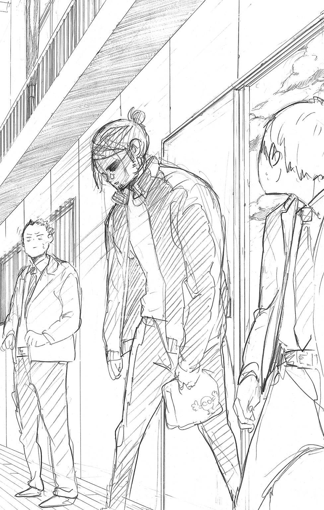
「違法ななにかをアレしてるんじゃ......」
「絶対、なんらかの組織と繫がってる人だって。目、合わせないほうがいいぞ」
東峰には「あ、若い。眩しい。羨ましい」くらいの気持ちしかなかったが、中学生たちにしてみれば裏社会の人間に睨まれたも同然だった。この本職ヤクザに比べたら、さっきの坊主頭なんて素人のチンピラだ。
膝を震わせ壁に倒れかからんとしている中学生に気づき「え、どうしたの？ 大丈夫か？」と、おずおず手を伸ばした東峰だったが、その大きな手で殴られるか捻り潰されるかとでも思ったのか、中学生たちは顔面蒼白になって左右に飛び退いた。
「なんで逃げるんだよぉ......」
がっくりと落ちこむ東峰の前へ、西谷がやってきて言った。
「旭さん！ 今日、中学生が見学に来るって言ったじゃないスか！」
「え？ あ、そっか。悪い、忘れてた」
エヘヘと笑って頭をかく東峰を叱りつけるように、西谷が続ける。
「しっかりしてくださいよ！」
「いやあ、進路相談行くまでは覚えてたんだけど......思ったよりいろいろ大変でな......」
教師との間になにがあったのか、どこか遠い目になる東峰だったが西谷は容赦ない。
「気合いが足りないから忘れるんじゃないですか？」
「そうかー、そうかもなー」
驚いたのは中学生たちだった。
ヤクザに向かってあんなに堂々と意見するなんて、あの小さい人、きっと吹っ飛ばされる......と、身を縮めて見ていたが、ようやく気づく。
見た目によらず対等、というより、明らかに小さいほうが強い。
「......こっちがボスだ」
「小さいほうが偉いって、基本だもんな」
「どんな学校なんだよ......」
中学生たちが引きつった顔を見あわせる。もう烏野のイメージはどん底だった。ヤクザとチンピラが仕切る修羅の国である。
なんとかここから逃げ出そうと、引率の教師に「あの、もう練習は十分見たので......」と言っている中学生に気づいて、縁下が声をかけた。
「ちょ、ちょっと待って。主将たちが戻ってきたら、もっとちゃんとするし。いつもはもっと......今ちょっと泥舟に乗っちゃってて......」
なんとか引き止めようとする縁下の言葉にも、中学生たちは過敏に反応する。
「泥舟って......？」
「きっと密航とかの隠語だよ」
「漁船に偽装した密輸船かも」
青い顔をしてコソコソと話す中学生に「え？ それなんの話？」と縁下が聞いたとき、再び体育館の扉が開いた。
「なにやってんだ......、ぜんぜん練習になってないじゃないか」
「まあ、わかってたことだけどね」
澤村と菅原が、ようやく進路相談から帰ってきたのだ。
主将と副主将の表情に気づき、縁下が「ほら、早く謝りにいくぞ！」と仲間たちを急き立てる。泥舟の船員たちが集まってきたが、しかし彼らが謝る前に澤村はあきれた顔をして東峰に訊いた。
「旭まで一緒になって遊んでたのか？」
「え？ いや、遊んでたわけじゃ......、いや......スマン......」
大きな身体を縮こまらせて頭を下げる東峰を見て「ほら」「やっぱりな」とアイコンタクトを取りあっていた中学生たちだったが、続く主将の声に思わず身をすくませた。
「お前ら、ちゃんと練習してろって言っただろ」
大きな声でも、激しい口調でもない。
静かに、低く、ゆっくり。
しかし、ものすごい恐怖が体育館を支配した。主将はゆっくりと続ける。
「試合も近いのに、なにふざけてるんだ？ 見ろ、せっかく見学に来てくれた中学生もあきれてるだろうが。......どこが、大船に乗ったつもりなんだ？」
「サーセン！」
部員たちがあわてて頭を下げる。そのしょんぼりとした顔を見回すと「まあ、今日はしかたないところもあるけど......」と、ため息をつき澤村は、床のボールを手にとった。
「じゃあ、始めるぞ！」
「あス!!」
ついに烏野高校排球部の本格始動だ。
主将、副主将、そしてエース。チームの要となる３年生が戻ったことで、さっきまでのグダグダとしたチームとはまるで別物になる。
見学者たちは目を見張った。
「なんか、やっと雰囲気出てきたって感じ？」
「うん。烏野、いいかも！」
「っていうか、このチームまとめてる主将がすごいんじゃない？」
帰る気満々だった中学生たちも、いつしか身を乗り出して練習を見学していた。
ペコペコと謝っているだけだった頼りないヒゲロンゲは、ヤクザではないまでも気迫がみなぎるエースで、無駄に転がって格好つけているだけに見えたリベロも噂に違わぬ才を見せる。チンピラにしか見えなかった坊主頭はチームのムードメーカーであることがわかり、驚異的な跳躍を見せた小さなアタッカーとセッターのコンビネーションは、さっきまで喧嘩ばかりだったふたりとは思えない。
もはや幻滅も失望もなかった。中学とは違うその迫力と気迫を身体で感じて、圧倒される。これが、噂に聞いた烏野高校の練習風景なのだ――。
熱気とかけ声が満ちはじめたときだった。
体育館を、すうっとひとすじの澄んだ風が通り抜けた気がした。中学生たちはもちろん、部員たちも思わず振り返る。
「ごめん、遅くなった」
それはマネージャーの清水の声だった。
「仁花ちゃんも、今日は委員会で遅れるって。今、急いで水持ってくる」
そう言って両手にジャグを持って出ていこうとした清水の姿に、中学生男子がどよめいた。彼らはヒゲロンゲの強面だけでなく、清水潔子に対しても免疫がないのだった。
「び、美人！」と言ったきり動けなくなる者もいれば、「入るしかねえ......、烏野入るしかねえ......」とブツブツ呟き続ける者、「あの！ 俺たち手伝います！」と即座に後を追いかける強者もいる。
もはや、誰もコートを見てはいなかった。
「......清水に全部持っていかれたな」
見学者たちの興奮を見て澤村が苦笑すると、東峰がのほほんと頷く。
「来年、入部希望者めちゃくちゃ増えたりしてなー」
「いや、来年、清水いないだろ」
菅原が笑うと、その背後で奇声が湧いた。
「うおおおおおおおッ！ それは......、その残酷な事実は、できるだけ考えないようにしていたのにッ!!」
見ると、田中と西谷のふたりがガバリと床に突っ伏している。通常運転だ。もう二年ほどほぼ毎日一緒にいるふたりがこのざまなのだから、免疫の有無ではないのかもしれない。
「潔子さん！ ......もう一年、もう一年だけ俺たちに時間をください!!」
「来年、俺たちと一緒に３年生をやりましょう!!」
床に転がっていたかと思うと、清水の周りに集まっていた中学生を蹴散らして土下座を始める。ふたりの異様な姿に怯えたのか、中学生たちが後ずさった。
「お前ら、留年を促すなって。また中学生にあきれられてるぞ、そのへんにしとけー」
菅原はそう言って止めたが、しかしふたりを囲む中学生たちの目に軽蔑の色はなかった。あるのは絶望だけだった。
「卒業......？」
「一緒に過ごせないなら、最初から出会いたくなかったな」
「俺ら、烏野に入る意味ないじゃん」
中学生たちの死んだ目に気づいた田中と西谷が「おお、お前らにもわかるか、この苦しみが......！」と、さらに男泣きに泣く。謎の熱気が渦巻く混沌の中へ、パタパタと無防備に駆けこんでくる小さな影があった。
「遅くなってすみま......え？」
谷地だった。泣き濡れる男たちの集団に気づいて「ヒッ！」と体育館の外まで逃げた谷地だったが、どうやら先輩たちの姿だと気づくと、抜き足差し足で恐る恐る戻ってくる。
「す、すいません......。サバト的なものが開かれてるのかと思って、つい逃げてしまいました......」
「サバトってなに？」
熱狂の輪から逃げてきた清水が訊く。
「あ、えーと、魔女信仰とか悪魔崇拝の宴というか、なんというか」
「魔女......」
一瞬、眼鏡の奥で複雑な表情を見せた清水だったが「とにかくここは危険だから、一緒に行こ」と谷地の手を引き、第二体育館を出ていった。
しかし清水がいなくなっても、男たちはもはや収拾がつかない。主将は泣き濡れる男たちを見下ろして、寂しそうに呟いた。
「俺、こいつらまとめられないのかな......」
「いや、部員をまとめるっていうか、人間として清水に勝てるかどうかじゃない？」
菅原の言葉にがっくりと肩を落とし「はは......ムリだな......」と、力なく笑う。そのいつもより小さく見える主将の背中を、菅原と東峰がポンといたわるように叩いた。
月末――10月25日からは春高の代表決定戦が行われる。
『落ちた強豪、飛べない烏』と揶揄され、日の当たらない場所で足踏みを続けていたような二年間を経て、やっと手に入れた切符だ。チームの結束もこれまでになく高まっており、毎日の練習、そのひとつひとつに確かな手応えが感じられる充実した日々だった――はずだった。
THAT'S ABSURD!
- GOLDEN VOLLEYBALL -
♯１「黄金のバレーボール」
のんびりとした日曜の午後だった。窓の外では水を撒いた芝生が、キラキラと眩しく輝いている。甲高い声が聞こえてくるのは、近所の公園で子どもと犬が駆け回っているのだろう。
ソファに深々と腰かけていた青根は読んでいた新聞をゆっくりと畳むと、傍らでパソコンに向かっている清水の顔を見た。気づいた清水が訊く。
「読んだ？」
青根がうなずくと、隣の部屋でテレビを見ていた日向が首を伸ばして話に入ってくる。
「なに？ なに、なに、なんの話？」
青根が放ってきた新聞を受け取り、日向は「どれ？ どの記事？」とページをめくっていく。なにを調べているのか、モニターを見たままの清水が短く答えた。
「黄金の、バレーボール」
「え？ ......あ、これかー」
日向が手を止める。
それは小さな記事だった。
富豪・影山氏が、なんでも願いが叶うといわれる珍品『黄金のバレーボール』を手に入れるため、学者、探偵など各分野のエキスパートを募集しているという。影山氏の願いは『世界の王様』とのこと――。
市内の小学校で育てていた金魚が体長五十センチになりました、ギネスをめざしてこれからも育て続けます。というベタ記事の隣に載っていたその内容は大真面目なニュースではなく、ちょっとした息抜きの色物扱いといったところだった。
「ふーん」
新聞を青根に戻す日向を見て、清水が訊いた。
「興味ない？」
「ないわけじゃないですけど......なんでも願いが叶うとか、つまんなくないのかなあ？ って」
「え？」
「大金持ちになりたい！ って頼んで、どこかからお金がポンと出てくるより、頑張って銀行や大金持ちの金庫から盗んだほうが絶対楽しいと思うし！」
日向の言葉に、青根もうんうんとうなずく。
「お宝を探すにしたって、この富豪の人みたいにエキスパートに頼むより、どこにあるのかなーって調べたり、どうやって忍びこもうかなーって自分でいろいろ考えて手に入れるほうが絶対楽しいと思うんですよねー」
「それは確かに泥棒の本懐だけど......」
清水はモニターに映った富豪・影山の写真を見て続けた。
「この人は、泥棒じゃないから」
「おれらと違って？」
日向が訊くと、清水の眼鏡がキラリと光る。
「そう、私たちと違って」
「じゃあ、おれらはおれらのやり方で手に入れよう!!」
日向は真剣な顔をして、ピョコンと飛びあがった。
元気な少年、クールな美女、強面ながらおっとりとした大男――決して家族には見えないこのアンバランスな三人組は、なにを隠そう泥棒集団だったのだ。
夜がふけると街へ繰りだしてひと稼ぎする三人だが、昼間は近所の大工仕事やベビーシッターなどで、付近の住民から疑われることもなく町に紛れこんでいる。
「興味ないんじゃなかったの？」
清水に訊かれた日向が、ムキになって答えた。
「それは、その、願いを叶えたいっていうのがよくわかんなかっただけで、珍しいものは欲しいじゃないですか！ 黄金のバレーボールって、それ、ちゃんと試合とかで使えるのか試してみたいし！」
「当たったら痛そうだけど......」
清水は眉をひそめて手首をさすってから、キーボードのリターンキーを押した。
「その黄金のバレーボールだけど、これまで本物を手にした人はいないんだって。誰が作ったのかもわからないし、調べてみてもヒットするのはここ最近の噂ばかり」
「ふーん。でもバレーボールって古い競技でもないし、昔から伝わってる宝物ってわけないもんなー」
清水の後ろからモニターの検索結果を見ていた日向だったが「あ、そうだ」と呟くと、ふたりに向かって言った。
「あの、その影山って人に黄金のバレーボールがどんなものなのか訊きに行きませんか？ 新聞に載ってたエキスパート募集っていうのに応募すれば、忍びこんだりしなくても行けますよね」
清水は机の引き出しから紙の束を取り出すと日向に渡した。
「いいけど、書類選考があるから自己ＰＲ文書いてね。原稿用紙十枚」
「え......？」
青根がゆっくりと立ちあがり、立ち尽くす日向の肩をぽんと叩いて、リビングを出ていった。
〈続〉
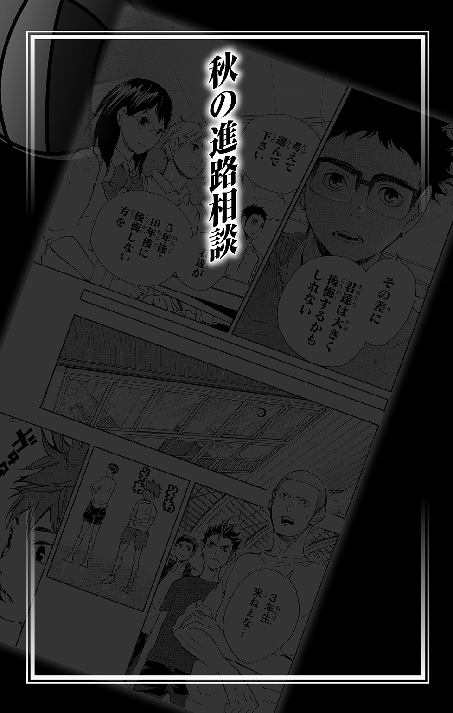
チャイムがホームルームの終わりを告げる。担任はまだ喋り足りないような顔をしていたが、手元のプリントをまとめると「じゃあ、面談は出席順で」と言い残して教室を出ていった。
この後、放課後を使って進路相談が行われるのだ。
担任のいなくなった３年４組はそれなりにざわついたが、春にはちらほら聞こえてきた「めんどくさい」「まだそんなの決められない」という声はもう出なかった。10月ともなれば、そんな悠長なことを言っている余裕もない。
春、最終学年のスタートをきったのは同時だったが、秋の盛りを迎えた今、クラスメイトそれぞれが立つ地点はバラバラだ。
センター試験の出願締めきりが近づいて焦る者、推薦入試の願書を出し終えて面接対策に励む者、授業中も予備校のテキストを見ている者、そしてすでに試験を終えて志望校に合格した者もいる。秋の教室には、あらゆるステータスの生徒が混在しており、もうみんな一緒とはいかない。
部活への向きあい方も、人によって変わってくる。夏までに引退した者が大多数ではあったが、この先の試合へ向けて、後輩たちとともにさらなる練習を重ねる者もいる。
男子バレーボール部のふたり、澤村大地と菅原孝支のように――。
「んっ......」
椅子に座ったまま軽く伸びをしていた菅原の目に、あわてたように廊下へ出ていく澤村の姿が飛びこんできた。面談へ向かうにはまだ早い。
「大地、もう行くの？」
「ん？」
振り返った澤村は、どこか言い訳でもするように言った。
「いや、ほら、今日、進路相談と部活見学が重なっただろ？ 一応、体育館に寄って様子見てから行こうと思ってな」
「ああ......」
なにもそこまで面倒を見なくても――とも思うが、その心配もわからないではない。なにせ、相手はあいつらだ。菅原は後輩たちの顔を思い浮かべて苦笑いする。
「そっか、そうだな」
「じゃあ、後でまた」
小走りで出ていく主将の背中を見送ると、菅原は感心しているのか、からかっているのかわからないような口調で呟いた。
「ウチの主将は面倒見がいいねぇ」
そしてパラパラと単語帳をめくったり隣の生徒と話したりしていたが、しばらくすると「そろそろ行くか」とおもむろに席を立った。
生徒たちがざわめく廊下をひとりペタペタ歩きながら、菅原は前の面談は６月だったなと思い出す。そして「４、５、６......」と指折り数えて、３年生になってから半年以上が過ぎていたことに気づいた。
あっと言う間だ。いつの間にか後半戦に入っていたことに、ちょっと焦る。
それにしても、今年はとくに時間のたつのが早い気がする。これまではほとんど行われなかった他校との練習試合、それに初めての東京合宿など、練習の幅が広がったせいだろう。加えて、単純に試合数もこれまでより多い。次の試合、そのまた次の試合へと勝ち進んでいけるようになったからだ。
一日一日が濃密で、その代わり過ぎゆくのも早かった。ちょっとでも気を抜くと、ただただ日々が無駄に過ぎてしまいそうで怖い。やりたいことはいくつもあり、時間はいくらあっても足りなかった。
「光陰矢の如し、少年老い易く学成り難し、親孝行したいときに親はなし......」
思いつくままに呟きつつ、一階への階段を下りようとした菅原がハッと足を止めた。
踊り場の手前、階段の妙に中途半端なところに東峰が呆然と立ち尽くしていたのだ。手すりにつかまったまま、ピクリとも動かない。他の生徒たちもすれ違いざま気にはしているが、いつも以上に凄まじく見える東峰の表情に気が引けるらしく、声をかけることなく逃げるように下りていく。
どうしてそんなところで立ち止まっているのか。駆けのぼろうとして、脚か腰でも痛めたんだろうか。だったら大変だ。菅原はあわてて声をかけた。
「旭、どうした。大丈夫か？」
「......え」
名前を呼ばれ、驚いたように顔を上げる。そして心配そうに見ている菅原に気づくと、東峰はふにゃっと顔を歪ませた。
あ、泣く寸前のやつだ。親戚の子どもが、この顔をしたあと必ず号泣する――と思った菅原だったが、さすがにエースは泣きはせず、しかしすがるような目で訴えかけてきた。
「スガぁ......俺......もう駄目だ......」
その表情から察するに、ケガや病気ではない。なんらかの弱音だろう。菅原は少しホッとしつつ訊いた。
「どうしたんだよ、面談でなんか言われたのか？」
「え、なんでわかるんだよ」
なんでもなにも、これから自分が面談なので適当に言っただけだったが、「ほら言ってみ？ なんか相談に乗れるかもしれないしさ」と促すと、東峰はうつむいたままポツリポツリと話しだした。
「俺さ......もし、春高に出られて、そこでも順調に勝ち進んだらとしたら、もしかして推薦っていう可能性もないではないかもしれないな、って先生に言われてさ......」
「まあ、全国で活躍したらな。その前に、まず代表決定選が......って、え、なんでそれで落ちこむんだよ」
菅原の疑問もむりはない。気の早い話ではあるが、決して悪い話ではないはずだ。浮かれこそすれ、落ちこむ理由はない。
「俺だって最初はそう思ったんだよ。でもさ、そううまくもいかないよ......」
まるで季節外れの怪談話でもするように眉間に深いシワを刻み、東峰はとうとうと語りだした。
「春、満開の桜の下を、期待に胸膨らませて歩く大学生の俺......。新歓コンパで出会う新しい友達、雑誌に出てくるような華やかな服をきた女子大生との合コン、待っているのは憧れのキャンパスライフだよ。そしてなんといっても親元を離れて初めての一人暮らしだよ。自炊に挑戦して気づくおふくろの料理のうまさ、宅配便で届いた実家からの荷物に入っている大量の野菜。どうするんだよな、こんなに。俺、料理なんてできないのにさ」
話が見えない。菅原は思わず口を挟んだ。
「ちょっと待てって。合コンと料理の話ばっかりで暗くなる要素がないし、そもそもバレーしてないし」
「いいから聞けって！ ここからが大事なんだよ、いいか？ ......そのうちさ、生活費の足しにと思って始めたバイトのかけもちで睡眠不足になるだろ？ そのせいで体力不足で練習についてけなくなって、とうとうチームの足手まといだよ。でも辞めるわけにもいかないだろ？ 肩身の狭い思いをし続けてなんとか卒業はしたものの、奨学金の返済に追われてずーっと借金生活だよ。それで、やっとのことで就職した先はブラック企業で、残業に次ぐ残業。な、わかるだろ？ 俺の人生に、明るい未来なんてないんだよ......」
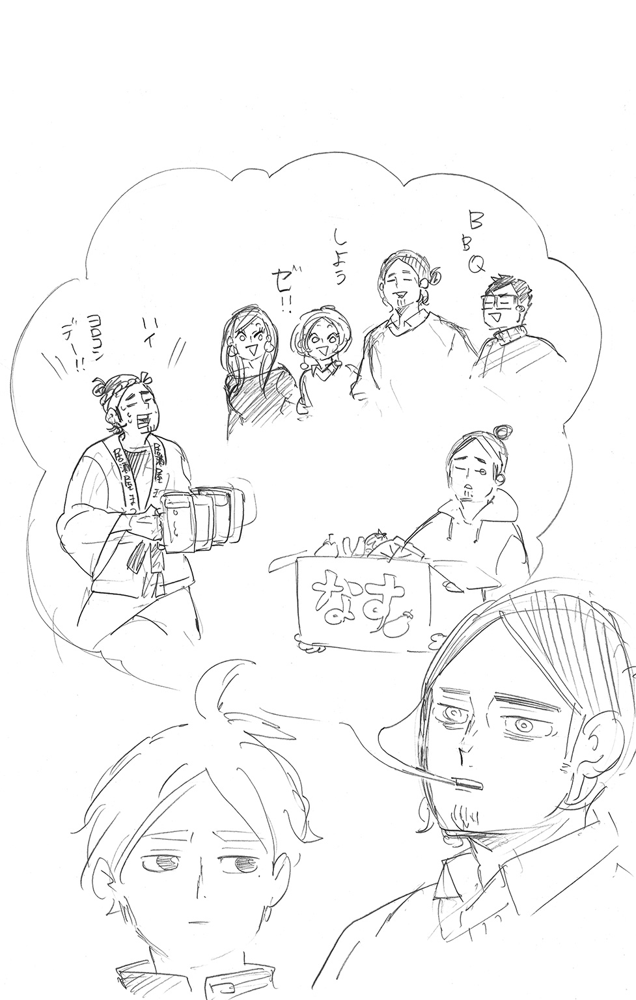
一気に喋ったかと思えば力なくしゃがみこんだエースの頭を黙って見下ろしつつ、菅原はどこから突っこめばいいか考えた。
「......あのさ、極端すぎるって。どうせ昨日テレビかなんか見たんだろ、ドキュメンタリーとかノンフィクション系のキツいやつ。そんな悪いことばっかり考えたってきりがないし、もっとポジティブに考えてさ」
「先生も、はじめはそう言ってたよ、前向きに考えろって。でも、話してるうちに、先生も家のローンがあと三十年もあって、しかも去年三人目が産まれて、子どもの学費のことを考えたらこの先どうしたらいいかわかんないって言いだしてさ......。俺も先生も、もうお先真っ暗なんだよ......」
なんで生徒に、よりによってうちのエースに不幸自慢なんてするんだ......と恨めしく思いつつ、菅原は呟いた。
「まあ先生も、旭の負のオーラに感染したんだろうけどさ」
その言葉に、膝に頭をうずめていた東峰が顔を上げる。
「か、感染ってなんだ？ イジメか？ 東峰菌とかそういうことか？」
「ほら、そういうとこだって！ 部活中はまだ西谷とか日向とかポジティブの塊みたいなヤツらが中和してくれるからいいけど、一対一だと旭のネガティブ光線かなりキツいからなー」
「えー、マジかー」
さらに縮こまろうとするエースをグッと引っ張って立ちあがらせると、菅原はニイッと笑顔を見せた。
「だーかーら、前向きに考えようってこと！ 先のことは俺もわかんないけど、まあ、とりあえずバイトのかけもちのことは白鳥沢に勝ってから悩むことにするべ！」
そう言って肩を叩くと、東峰もつられて少し笑った。
「白鳥沢に......。ハハ、まあ、そうだよな......」
その顔を見てようやく安心したところで、菅原は「あっ」と思い出した。
「そうだ、旭さ、面談終わったなら、部活のほう早めに顔出してやってくれる？ 大地が、１、２年だけにしとくのすっごい心配してたから」
「え？ ああ、わかった。そうだな」
「それじゃ、後でなー」
大きく手を振って階段を下りると、廊下の先にある進路指導室の前ではちょうど出席順でひとつ前の生徒が順番を待っていた。
「あ、菅原。よかった、前の奴、もう出てくる頃だからどうしようかと思ったよ」
「悪い悪い、なんか面倒な話に巻きこまれてさー」
「え、大丈夫か？」
「まあ、いつものことなんだけどさ」
そう言って笑ったとき、進路指導室の扉が開いた。面談を終えたクラスメイトが出てきて、入れ替わりに前の生徒が入っていく。ひとりになった菅原はなんとなくため息をついて壁に背を預け、天井を見あげた。
「ありがとうございました」
一礼して進路指導室を出た菅原へ、廊下で順番を待っていた同級生が「おつかれ」と声をかける。「おう、お先」と返すと菅原は足早に歩きだした。
これでやっと部活へ行ける。澤村も東峰も、もう先に行っているだろう。早く教室へ戻ろうとしていた菅原だったが、その足が階段の手前でふと止まった。
悪い予感がする。
菅原は壁の端からそっと顔を出し、また途中で固まってる奴がいないかどうか階段の様子をうかがってみた。
「.........あ」
さっきと同じ中途半端なところに人影があった。一瞬、まだいたのかと身がまえたが、そこにいたのはヒゲの大男ではなく、ふたりの男女だった。
「澤村はすごいよね！ 練習と受験勉強の両方だもん、毎日大変でしょ」
道宮の声だ。踊り場の窓から差す西日も気にせず、真っすぐに澤村を見あげている。
「ん？ ああ、でも今に始まったことじゃないからな」
頭をかきながら応える主将を見て、なんかもっと他に言い方あるだろうが......と歯がゆくなる菅原だったが「そっかー、そうだよね！」と素直に頷いている道宮を見て、あ、それでいいんだ、と思う。
「どっちもずっと頑張ってたもんね！ やっぱり澤村は偉いなー」
「いや、やりたいことやってるだけだし、偉くはないって。後輩たちから見たら、ずっと残ってて邪魔な奴かもしれないよな。いつ出てけって言われるか気が気じゃないよ」
澤村がそう言ってふざけると、道宮はきゅっと拳を握って真剣な目をする。
「そんなことないって！ だってみんな、澤村がいないと......」
そのとき、やっと澤村が気づいた。
「あ、スガ。なにやってるんだ、そんなとこで」
その言葉に道宮も振り返り、少し恥ずかしそうに「あ、菅原。なんか久しぶり」と手を振る。
「いやー、隠れてたわけじゃないんだけどさ！」
ゴメンゴメンと階段を上がってきた菅原に、澤村が訊く。
「面談終わったのか？」
「ああ」
「じゃ、行くか」
そう言って二階へ上がろうとする澤村に、菅原は少しあわてて声をかけた。
「あ、悪い！ 俺さ、教室戻ってカバン取ってくるから、大地、先に行っててくれる？」
「え？ いや、俺も教室に荷物置いてあるから」
「なんだ、そっか」
なぜか残念そうに呟いて階段をのぼりはじめた菅原を「なんだよそれ」と澤村が追いかける。その背中へ道宮が声をかけた。
「じゃ、わたし帰るから。じゃーね！ 練習頑張ってね！」
元気に手を振る道宮の頰を、夕陽がオレンジ色に染めていた。澤村も軽く手を挙げて応える。
「ああ、サンキュ。またな」
そして男子ふたりは二階へ、道宮は玄関へと別れたのだった。
教室に入ったところで、菅原がいきなり振り返って言った。
「道宮と喋っててよかったのに」
「え、なんでだ？」
澤村がキョトンとして訊き返す。
その、なんの迷いもないような主将の顔に、もどかしいような、じれったいような「アホか」と言ってやりたいような気分が湧きあがってくるが、言っても通じないだろうと諦める。
あきれ返る菅原の気持ちも知らず、澤村はしごく真面目に体育館の心配などしているのだった。
「早く行かないと部活見学の中学生にも申し訳ないよな......って、なんだよスガ、さっきからその顔」
「え？ べつにー」
そう言ってカバンをつかみ「行くべ」と教室を出た菅原を追いながら、澤村はひとり首を傾げるのだった。
「......変な奴だな」
そしてふたりは、ようやく体育館の扉を開けたのだった。
が、まず澤村の目に入ってきたのは、いったい何をしたのか、西谷に叱られてしょぼくれる東峰の姿だった。その奥には、こちらも何をしたのか「だから誤解だって！ 嚙んでない！」と文句を言う田中を成田と木下がなだめている。
「な......これ......」
澤村が言葉を失う。
続いてゴロリゴロリという異音に足元を見ると、床では日向が一心不乱に受け身の練習をしており、その日向に「このボゲ！」と影山が投げつけたボールが跳ねて転がっていく。騒がしい体育館の隅では月島がぼんやりと休んでいて、その周りを弱りきった山口がウロウロしていた。
そして、なぜか中学生と縁下が深刻そうに話しているのだった。
「なにやってんだ......、ぜんぜん練習になってないじゃないか」
呆然とする澤村の隣で、菅原が苦笑する。
「まあ、わかってたことだけどね」
「いや、それはそうだけど、わざわざ注意してから行ったのになんで......いや、違う。悪いのはこいつらじゃない、面談の日だってことを忘れてた俺が悪いんだ。ぜんぶ俺の責任なんだ......」
澤村が頭を抱える。その姿を見て「いやー、これは普通にこいつらがダメでしょ」と笑った菅原の声が体育館に響き、さすがの部員たちもふたりに気づいた。
体育館中の視線が扉に集まる。
ほんの一瞬、体育館はしんと静まり返り、そしてまたワッと一気にざわめいた。後輩たちが血相を変えてかけ寄ってきたのだ。
その様子に、菅原はつい吹き出した。
なんだろう。後輩たちのあわてた顔もおかしいし、「旭まで一緒になって遊んでたのか？」と東峰に詰め寄ったり、後輩を集めて小言を言っている澤村もおかしい。なにがおかしいのかわからないけれど、なんだか腹の底からぽこぽことおかしさが湧いてきて頰がゆるむ。
なんだろうな、本気で怒ったり反省したりしてる大地と違って、俺ちょっと無責任なのかな、と思っていると澤村がボールを手に取って言った。
「じゃあ、始めるぞ！」
主将の号令に、部員たちがピンと背筋を伸ばして応える。
「あス!!」
その声に押されるように、部員たちがいっせいに駆けだした。ここからやっと、練習が始まるのだ。
「よし、俺もやるか」
菅原もパチンと頰を軽く叩いて気合いを入れたところで、まだどんよりとしている東峰と目があった。この様子だと、さっき「前向きに考えよう」と言ったことを覚えているとも思えない。まあ、面談はさんざんで、澤村にも叱られたのではさすがに可哀想だった。
菅原は「あのさ」と澤村のジャージを引っ張った。
「ん？ スガか、なんだ？」
「旭のやつさ、なんかさっきの面談がメチャクチャ大変だったらしいんだよね」
「......えっ、そうなのか？ 旭、大丈夫か？」
東峰は肩を落としたまま頷く。
「ああ......ちょっといろいろな......。大地はどうだった？ 面談」
「俺か？」
澤村はちょっと眉を上げて「うーん」と思い出すように唸ったかと思うと、意外とさらりと言った。
「俺はべつに、前の面談と同じだな。スガは？」
そう訊かれて、菅原はニッと白い歯を見せる。
「ん？ 俺も、前と同じ」
前の面談は６月、ちょうどインターハイ宮城県予選に敗退した後だった。青葉城西に、あと一歩のところで力及ばず負けた試合だ。
３年生には、その時点で部活を引退するという選択肢もあった。１、２年生の新体制で春高を目指し、３年生は受験に専念するという道だ。
実際、面談では教師にそう諭された。
――勉強に専念したほうがいい。
――正直、部活を続けてお前にメリットがあるとは思えない。
そう言われて――適当にではなく、先生なりに自分のことを一生懸命考えてくれた結果としてそう言われて、しかし菅原は素直に首肯することができなかった。
もし定期テストで良い点をとることや早い時期に進学先を決めることが高校生活の目的なら、そのために効率的に動くことだけを良しとするなら、そもそも部活自体がデメリットだよな、と思う。時間も体力も奪われて、いいことなんてなにもない。それに、部活だけじゃなくて文化祭や修学旅行だって必要ないはずだ。
もしそんなこと言ったら、子どもの屁理屈だと笑われるのだろうが――。
わかってはいる。
レギュラーでもないし、スポーツ推薦の話がくるわけもないから、心配してくれてるんだろうと頭ではわかる。
でも、そんな〝メリット〟のために部活をやってきたのだったか。
１年生のころを思い出す。たった三人の新入部員としてバレー部に入ったときのことを。練習ではボール拾い、試合ではベンチで応援するだけだったころ。指導者もなく、練習試合もなく、ただ自分たちだけであがいていたころのことを――。
ここで辞めたら、あの時間はどうなるんだろう。
あの、仲間となんとか支えあってきた時期。まったく先の見えない暗闇にいるような日々だったけれど、でも、その先にきっと光明があると信じて、何度もくじけそうになりながら、そのたび心に鞭打つように、必死に前だけを見てやってきた時間はただ無意味だったとでもいうのか。
そんなはずはない。
そんなことは誰にも言わせない。
メリットがあるからバレーをやってるんじゃない。
ただ、春高を目指してるだけだ。
また、烏野で全国の舞台へ行く。
それだけだ。
自分にできるのは、意地でも前を見続けることだけ。これまでもずっとそうやってきたのだ。
だから、今回も前回も、面談の内容は同じだった。
部活を辞める気はない。春校を目指すためにこのまま練習を続ける。志望校も変えない。
それだけだった。
ニコニコとしている菅原を見て、東峰は「そっかー、いいなー」とうつむいた。
「旭は進路相談でなに言われたんだ？」
澤村に心配されて、東峰は口ごもりながら話しだす。
「いや......だから住宅ローンがさ......」
「悪い、ちょっとわからない」
速攻で話の腰を折られた東峰が涙目になる。
「え、まだなにも言ってないし!? 諦めるの早いから！」
「でも、またいつものネガティブな妄想だろ？ 聞いてもしょうがないからな」
「大地、冷たい......」
澤村と東峰のやりとりに笑っていると「ごめん、遅くなった」と清水も戻ってくる。
その姿に中学生たちがざわめき、田中と西谷も待ってましたとばかりに立ちあがる。あれよあれよという間に体育館は妙な熱気を帯び、男子たちは清水を囲んで騒ぎだした。やっと動きだしたと思われたチームが、またぐるぐるとトグロを巻きはじめる。
奇祭じみた盛りあがりを見せる部員たちをチラと見て、澤村は情けなさそうに呻いた。
「俺、こいつらまとめられないのかな......」
「いや、部員をまとめるっていうか、人間として清水に勝てるかどうかじゃない？」
菅原の言葉にがっくりと肩を落とし「はは......ムリだな......」と、力なく笑った主将の背中がいつもより小さく見える。その背をいたわるようにポンと叩くと、菅原は後輩たちを眺めて言った。
「まあ......こういう型破りなとこもいいんじゃない、元気で。この時期にふざけられるのがすごいってことで、とりあえず前向きに考えるべー」
「いや、型を破るっていうのは、ちゃんと基本の型ができてからの話で......」と、不服そうにぶつぶつ呟いていた澤村だったが、やがて気をとり直したように背中を伸ばし「そうだな、基本。基本からだな！」と顔を上げた。
腹をくくったのだろう。なにかを潔く諦めたような明るい表情で、部員たちを呼ぶ。
「おーい、お前ら！」
主将の声に、部員たちがハッと振り返って集まってくる。その素早い反応に「うん」と満足そうに頷くと、澤村はにっこりと笑って命じた。
「まずは基本から！ ということで、サーブ百本！」
「えっ！」
「マジか！」
どよめく後輩たちを見回してなお笑顔を崩さず、しかし眼力はさらに強く澤村が尋ねる。
「なんだ？ もう基本ならできています、と、そういうことか？」
「い、いえ!!」
「じゃあ、つべこべ言わずに開始！」
「......ハイ！」
後輩たちの弱りきった顔を見て菅原はまた吹き出し、そして気づく。
そうか。
これ、おかしいんじゃないんだ。
楽しいんだな。
このいつもの仲間たちと、いつもの場所で、ふざけたり、怒られたり、弱音を聞かされたり――いつもどおり練習できることがうれしいんだ。
そう思いながら後輩たちと一緒にエンドラインに並ぶと、主将のホイッスルが鳴る。
菅原はネットの向こうを見据えると、ボールを上げた。
代表決定戦に進むのは烏野を入れて十六校、全国へ進めるのはたった一校だ。これまで白鳥沢学園の指定席だった春高への切符を、今年は俺たちが手に入れる。
そのためには怯まず、諦めず、ただ前を向いて日々の練習を繰り返すしかなかった。もし部活をやることにメリットがあるとしたら、気が遠くなるほど繰り返したその先に、自分だけのなんらかの感触をつかめることではないだろうか。
ここまでできるようになった、ここまで行けるようになった――と。それが自信となり、自信は勝利を呼ぶ。
代表決定戦で負ければ、そこで引退だ。だけど、勝てばまたこいつらと戦える。
菅原はコートに居並ぶチームメイトを見まわした。そして、苦手なサーブに四苦八苦する日向に気づいて駆け寄る。
「ほら、日向、サーブはスパイクと違うから、打ちつける感じじゃなくてさ、手はこう」
「......こ、こう......ですか？」
ぎこちなく手首を動かす日向を見て、頷く。
「ん、前にな。で、サーブトスはあんまり高く上げすぎないようにしてやってみ？」
「ハイ！ ......よーしッ！」
返事は元気だが、修正したサーブトスにタイミングがあわない。日向のサーブはネットにぶつかり跳ね返ってきた。
そう簡単にうまくいくものではない。つかみとれるまで、繰り返すだけだ。
「あ、あれー？ ......えーと、高く上げすぎないように、で、手を......」
ぶつぶつ呟きながらサーブを繰り返す日向に「フォームはさっきよりよくなってるから」と声をかける。
勝つためにできることを、すべてやらなくちゃいけない。変えられることはないか、直せることはないか、やり残したことはないか――。
やりたいこと、やらなくちゃいけないことはいくつもあり、時間はいくらあっても足りなかった。
やっと、やっと訪れたこのチャンスを、絶対に逃すわけにはいかない。
ずっと春高を目指してやってきたのだ。烏野高校排球部は、再び全国の舞台へ行く。行くだけじゃない、狙うのは全国大会優勝だ。
そのあと、みんなで旭の人生相談を聞いてやるのも忘れないようにしないとな。
THAT'S ABSURD!
- GOLDEN VOLLEYBALL -
♯２「世界の王様」
数日後、日向たち三人組は豪奢な洋館の前に立っていた。原稿用紙十枚分の自己ＰＲ文と履歴書を郵送した結果、富豪・影山氏の屋敷へ、めでたく呼び出されたのだった。
「書類審査が通ってよかった！ 三日寝ないで書いたもんなー！」
緑に囲まれたアプローチをピョコピョコ飛び跳ねて進む日向の後ろで、清水が苦笑する。
「最後『！！！！！！！！』で、字数稼いでたけどね」
青根がうん、うん、とうなずくと、日向が顔を真っ赤にして言い訳した。
「そ、それは文字数稼ぎじゃなくて、おれのやる気ですから！！！！！！！！ ほとばしるやる気！！！！！！！！」
「わかったわかった」
騒がしく屋敷へ入っていった三人の背後で、静かに扉が閉まる。日向は吹き抜けになったホールを見あげると目を白黒させた。
「すっげー、本当にお屋敷だ！ シャンデリアもある！」
「さすが富豪の家。ゆっくり、すみずみまで見てみたいものだけど......」
泥棒目線で屋敷を見ている清水の後ろで、日向が青い顔をしていた。
「でもオバケも出そう......。トイレどこだろ......」
キョロキョロとトイレを探していると、中央の階段の上から大きな声が降ってきた。
「フハハハハハハ、よく来たな」
「......ふはは？」
日向たちが二階を見あげる。現れたのは、白いスーツに身を包んだ富豪・影山氏本人だった。
ひとり階段を下りてきた富豪・影山氏は、日向たちの前へ出ると奥の部屋をさし示す。
「では、さっそく面接だ。応接室へ来てもらおうか。フハハハハハハ！」
富豪・影山の後をついて歩きながら、日向はコソッと清水にささやく。
「なんか偉そうなヤツですね。笑い方ヘンだし」
「まあ富豪だから」
長い廊下を歩いて応接室に入ると、四人はソファに腰かけた。まず富豪・影山氏が口を開く。
「君たちは、黄金のバレーボールを探す手伝いをしてくれるということだが」
「ハイ！ ハイ！ その前に、おれたちそのボールのこと知りたいんです。由来とか、いわれとか」
日向が訊くと、富豪・影山氏は即答した。
「よく知らん！」
「え？」
三人は顔を見あわせたが、富豪は意に介することなく豪快に笑う。
「インターネットで噂を見て、どうしても欲しくなったのだ！ なんでも願いが叶うんだぞ、俺は世界の王様になる！ フハハハハハハ！」
「もしかして、実在するかどうかもわからないとか......」
眉をひそめた清水に気づき、影山が笑った。
「なにを言っているんだ？ 当たるかどうかわからなくとも、宝くじは買わないと当たらないだろう。宝物もとりあえず探さないと見つからないだろうが、フハハハハハハ！」
清水が思わずうなずく。
「富豪の言うことにも、一理あるかも......」
日向は「こ、これが......富豪になる男の哲学......」と打ち震えていたかと思うと、ソファから立ちあがって富豪・影山氏に宣言した。
「富豪とおれたち、どっちが先に黄金のバレーボールを見つけられるか勝負してください！」
「お前たち、俺の手下になりにきたんじゃ、ないのか......？」
ムッとする富豪・影山氏だったが、しかし、すぐさまニヤリと笑う。
「まあいい。面白い、望むところだ!!」
「じゃあ、そういうことで!!」
応接室を出た三人はそのまま廊下を戻り、外へ出ようと玄関のドアノブを回した。
「......あれ？」
先頭でドアノブをつかんでいた日向が、異変を察知して跳ぶ。
「危ない！」
玄関のドアがいきなり爆発したときには、三人はすでにその場から離れて、床に伏せていた。
「フハハハハハハハ！ 勘のいい奴らめ！」
笑いながらやってきた富豪・影山氏へ、日向が怒鳴る。
「なにすんだよ、危ないだろ！」
「フハハハハハハハ！ 邪魔者は根絶やしにするのだー！」
「なんだよ、望むところだって言ってたくせに！」
言いあうふたりを尻目に、清水がおののく。
「富豪とはいえ、自宅ごと爆破するなんて......えっ!!」
と、その清水の足下が動いた。音もなく床が動き、深い穴が口を開けたのだった。床下はマグマのように赤く煮えたぎり、熱気が噴きあがっている。日向が叫んだ。
「これ、なんか溶鉱炉的なやつだ！」
〈続〉
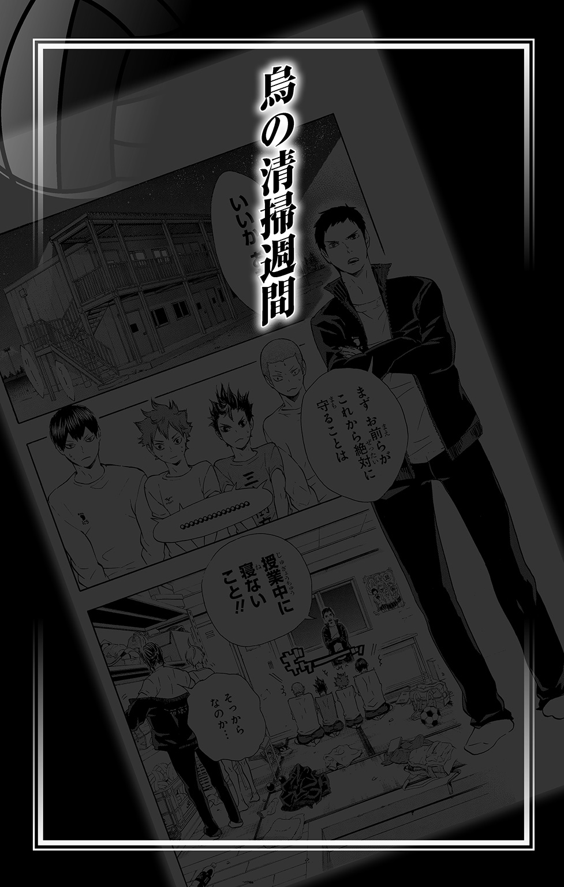
その話が伝えられたのは金曜日の放課後だった。体育館に駆けこんできた顧問の武田が、ついさっき始まったばかりの練習を中断させる。
「あの、ちょっといいですか！」
うわずった武田の声に、部員たちがなにごとかと集まってくる。
急な知らせは悪い知らせと相場が決まっているものだ。しかし、過去には練習試合や合宿の知らせなどうれしいニュースが伝えられたこともあり、集まった部員たちの気持ちは不安と期待とが五分と五分といったところだった。
ずり落ちた眼鏡を直した武田は、神妙な顔で待つ部員たちを見回すと言いづらそうにきりだした。
「......今週は、秋の清掃週間だってことは伝えましたよね。たしか、月曜の朝に」
部員たちはちょっと拍子抜けして顔を見あわせた。なんの話だかわからない。良いニュースか悪いニュースかという前に、なんの話だかわからない。「なんだっけ、それ」と素直に訊くのはさすがに武田に申し訳なく、とりあえず部員たちで牽制しあう。
「えーと、そうだった......かも？」
「え？ あ、ああ。言われてみれば、そんな話も聞いたような？」
「そ、そうだな。なあ？」
日々の連絡事項のなかで言われたような気もしないではないが、練習と直接関係なさそうなことはふわりと頭から消えてしまいがちだ。マネージャーの日誌には書いてあるのだろうが、今ふたりは買い出しのため不在にしている。
「ツッキー覚えてる？」
山口に訊かれた月島が当然のように、そしてまるで興味なさそうに答えた。
「覚えてはいる。とくになにもしてないけど」
その小さな声を聞きのがさず、武田が眼鏡を光らせる。
「そう、そこなんだ」
月島が「え？」と眉をひそめ、他の部員たちが「そこってどこ？」と訊きあうなか、武田は沈痛な面持ちで続けた。
「どの部でも、誰も、なにもしなかったんです。まあ、とくに全校をあげて大掃除をしなくちゃいけない、という話じゃなかったはずなんだけど......そうはいっても、強制しなくても生徒たちが自発的に掃除してくれるだろうって期待していたみたいなんだよね」
「え、誰がですか？」
日向が思わず訊くと、武田はモゴモゴと空気の漏れるような声で応えた。
「......教頭先生」
「あー」
部員全員が同時に同じ声を発する。チームを団結させるのは、共通の目標だけでなく、共通の敵の場合もあるようだった。
「僕ら教師がちゃんと教頭先生の意向をくんで、みんなに伝えられればよかったんだけど......ごめん」
肩を落として謝る武田をかばうように、田中と西谷が非難の声をあげる。
「言わなくてもやってくれると思ってたって......恥ずかしがり屋か！ 言えよ！」
「男らしくない！」
教頭へのブーイングとバッシングでざわめくなか、ハイッと元気に手を挙げて日向が訊く。
「あのー、っていうことは、みんなで大掃除しなきゃいけないってことですか？」
武田は申し訳なさそうに頷く。
「うん。みんなで手分けして、体育館と部室の掃除をお願いします。あとで教頭先生が点検にいらっしゃるらしいので、試合が近いところ申し訳ないんですけど、目立つところだけでも丁寧に......」
「掃除の点検って......バイト長か！ 細かいだろ！」
「男らしくない！」
吠える田中と西谷を制して黙らせると、澤村が訊いた。
「あの、教頭先生の点検っていつなんですか？」
問題はそこだ。清掃週間は今週いっぱい、そして今は金曜の放課後である。
「ええっと......」
武田の目が、逃げ場を探すように泳ぐ。
「いつ来るんですか、先生」
再び問うた澤村の声が一段下がり、場の空気がサッと変わった。後輩たちが思わず姿勢を正す。武田も覚悟を決めたように顔を上げると、震える口を開いた。
「今日......です」
かくして男子バレー部による突貫大掃除が始まった。武田の言うとおり、目につきやすいところだけでも念入りにやろうと、主将の澤村が采配を振るう。
「１年は体育館の床磨きを頼む、２年はボールまわり、俺たちは破れたネットを直すか。体育館が終わったら、その後、各自部室のロッカーを片づけよう。部室に無駄な物を置いてる奴は、捨てるか教室に持っていくかしておけよ。見つかるとうるさいからな」
部員たちがやる気なく「はーい」と声を揃えるなか、田中は不満そうに呟いた。
「教頭こそ、頭に無駄なもの載っけてるくせに......」
「おいよせよ、見たとき笑っちゃうだろ！」
縁下が真顔で咎めると部員たちもようやく笑い、突如舞いこんだ大掃除に取りかかるべく駆けだした。
「よし、行くぞ......」
体育館の隅で、２年生五人が静かに睨みあっている。ふだんは田中や西谷のノリと勢いに押されがちな成田、木下も負けじと睨み返し、ギュッと拳を握る。張りつめた一触即発の空気から一転、五人が同時に叫んだ。
「......じゃんけんぽん！」
「ヨッシャ、勝った！ 俺、ボール磨きー」
「俺も！」
成田と木下が、喜々として床のウエスとクリーナーをつかみとる。勝負に負けた田中、西谷、縁下は悔しそうに空気入れを手にした。地味に疲れる単純作業から逃れて小躍りするボール磨き組を、縁下が恨めしそうに睨む。
「じゃあ、俺らで空気入れてくから、お前ら顔が映るくらい磨きこめよ」
「いや、ムリだから」
即答する木下に「そのくらいの気合いでってことだよ」と念を押し、縁下はくたびれた空気入れを見た。
「これ、使いにくいんだよな。電動のがあればいいんだけど......」
文句を言いながらしぶしぶ空気を入れはじめた縁下とは真逆に、やけに楽しそうなのが田中と西谷だった。ふたりは目を見あわせてニヤリと笑う。
「ノヤっさん、勝負だ！」
「望むところだ！ よーい......」
「ドン！」
ふたり揃って空気入れからシャキーンと針を出し、シュコシュコシュコシュコと空気入れ合戦が始まった。
ウオーッと気炎を吐きながら競いあうふたりを見て、縁下がひとりごちる。
「なんでそんな元気なんだよ......」
そしてハッとなにごとかに気づき、心配そうに言い足す。
「おい、やる気あるのはいいけど、そのボール古いし、あんま入れすぎると......」
しかし、気づくのが少し遅かった。
――パン
「うわッ!!」
「な、なんだ！」
「出た！ ボール割れてなんか出た！」
「なんだこれ、内臓!?」
飛びあがったり飛びすさったりと、２年生がバタバタとあわてふためく。
「だから言っただろ！ あー、また先輩に怒られるぞ......」
縁下は頭を抱えたが、しかし、３年生がやってくる気配はなかった。
ふだんなら、からかうなり注意するなりあきれるなり、なんらかのリアクションを見せる３年生がなぜかやってこない。このパンク騒ぎを無視している。２年生のことなど、もう諦めてしまったのだろうか。
いや、匙を投げたわけではなかった。彼らは彼らで自分たちの仕事に必死だったのだ。
３年生三人は黙々と破れたネットの穴を繕っていた。その必死な表情からは、後輩たちの騒ぎに気づいている様子はない。ほとんど会話もなく、背中を丸め、ただただ小さく小さく手を動かし続けている。
澤村がようやく口を開いたが、２年生のボール破壊についてではなかった。
「すごく結びにくくないか、これ」
「ん？」
菅原が顔を上げる。そして澤村の手元を見て、辛辣な意見を口にした。
「大地、意外と不器用」
「え、そうか？」
「ほら、ここ、編み目が正方形になってないって。いびつ」
確かに、糸の切れた箇所をそのまま結んで補修しているため、一辺だけ短くひっぱられている。
「ちゃんと補修用の糸使って長さ合わせていかないと。きっと教頭そういうとこ見つけて嫌味っぽくネチネチ言ってくるって。道具を大事にしないということはーとか言ってさ」
確かに菅原の言うとおりだ。今回の目標は教頭のチェックに合格すること。使い勝手に問題がなくても、見た目に綺麗になっていないと文句を言われる可能性があった。突っこみどころは与えないほうがいい。
「そうだな......」
澤村はせっかく結んだ糸をほどくと、補修糸とハサミを手に最初からやり直す。
三人はあぐらをかいてうつむき、肩を落とし、目をしばたたかせながら、チマチマチマチマと指先だけを動かし続けていた。
そしてしばらくすると、菅原がぽつりと言う。
「家内制手工業って感じ」
「マニファクチュアの誕生が待たれるな」
澤村の返しに、東峰も笑う。
「それ、必殺技っぽい」
「喰らえ、マニファクチャー！ って？」
ふざけてポーズをとる菅原にひとしきり笑ったかと思うと三人はまたスッと黙りこみ、黙々と地味な修復作業に戻るのだった。
「あと何か所くらいある？」
澤村が訊くも、床でくしゃくしゃと波打つネットを見た東峰は「わかんね」と肩をすくめ、ただひとつ、確かにわかっていることを言った。
「これ終わったら、ネットもうひとつあるんだよなぁ」
三人は顔を見あわせ、大きなため息をついた。このとおり、ネットの海で溺れかけている三人に後輩たちの様子まで見ている余裕はないのだった。
背中を丸めて繕い物に精を出す３年生の後ろを、ふたつの低く黒い影が騒がしく駆け抜けていく。
「この......待てッ！」
「やーだねー！」
影山と日向が、床の雑巾がけをしているのだ。パタパタと慣れた様子で床を蹴っていく日向に比べると、影山のほうはどうも不格好で床に這いつくばってもがいていると言ったほうが近い。
じゃんけんに勝ち、雑巾がけを逃れモップをかけていた月島が、影山の姿を評して言う。
「なんか蜘蛛みたいで嫌なんだけど」
這いつくばっていい気味だという思いより、見た目の気持ち悪さが先に立つ。隣の山口はといえば、日向の雑巾がけフォームに感心しきっている。
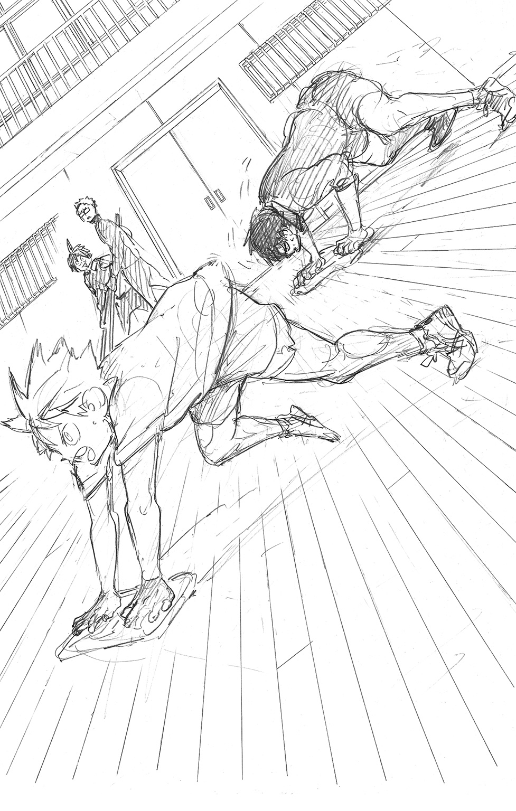
「日向と影山、意外と差がついてるね。日向、家でもやってて慣れてるのかな」
「......単に、手足が短いから動きやすいだけでしょ」
「そっか、さすがツッキー！」
そのとき、はるか遠くにいた日向が足を止めて立ちあがった。
「おい、おまえら！ 今の聞こえたからなー!!」
日向の地獄耳に、月島が眉間にしわを寄せ、山口はモップを持ったまま笑う。
「なんで聞こえるわけ、気持ち悪い......」
「日向って、視力とかも、ものすごそうだよね！」
その小さな声に、日向がさらに反応する。
「だから聞こえてるって言ってるだろ!!」
顔を真っ赤にして雑巾を振りまわしていた日向の足元を、影山が無言でバタバタと追い抜いていった。
「あ、影山！ 卑怯だぞ、待て！」
ふたりは休むことなく、雑巾をゆすぎもせず、ぐるぐるぐるぐると体育館を回り続けている。もはや汚れを広げているだけにも思えるふたりから目をそらし、月島は黙ってモップを壁に立てかけた。
「床掃除は、あの人力ルンバ二台にやらせておこう」
「そうだね、部室も掃除しないとね」
そして月島と山口は体育館を後にして、部室へ向かったのだった。
部室はふだんからある程度片づいており、大した作業はなさそうに思えた。スチールラックに放置してある紙袋や段ボール箱の中身を確認して捨てるだけでも、だいぶ片づいたように見えるだろう。
「これ、春から一度も開けてないんだし、きっといらない物だよね」
山口は段ボール箱を棚から下ろすと、無造作にその中身を取り出した。
「......なんだろ、ビニール袋だけど」
普通の、なんのへんてつもない、スーパーかコンビニのビニール袋。その中になにか入っているようだが、軽い。
「どうせゴミでしょ」
「待って、開けるから」
そう言って山口は固く縛られたビニール袋を開けようとしたが、月島はその姿にふと不安を感じた。
「ちょっと待って、やるなら外で......」
「え、なに？ あ、開いた。......えーと、うわっ！ な、なにこの臭い......！」
遅かった。山口はビニール袋を放り出し、咳きこみながら窓を全開にする。月島はすでに部室を飛び出して階段の下まで逃げていた。
「なにが入ってたら、あんな臭いがするわけ」
部室を見あげて顔をしかめる月島に、クシャミをしながら階段を下りてきた山口が青い顔をして言う。
「なんか......ほわほわした緑色のもの......いろんな緑色がグラデーションになったなにかが見えたけど、怖くてもう見れない......。腐海のはじまりかもしれない......」
「最悪」
元がタオルだったのかＴシャツだったのか、それとも雑巾だったのかわからないが、なにかが使用後濡れたまま放置された結果の生成物だろう。
誰が、いつ、なぜ隠したのか。ふたりはそれを問うつもりはなかった。その代わり、一刻も早く、誰にもなにも確認せず、あれを捨てさせてもらう。あの臭いを嗅がされたのだ、そのくらいの権限は欲しい。できるならば記憶からも消し去りたいくらいだ。
「マスクもらってくる......保健室にあるよね......」
山口はとぼとぼと校舎へ向かい、月島は力なく階段の下にしゃがみこんだ。
「やっぱ、部室はそんなに変わんねーなー」
カビまみれのなにかを捨て、あらゆる場所をアルコール除菌ティッシュで拭きまくった部室に他の部員たちがやってきた。体育館の掃除や備品の補修を終え、自分のロッカーを片づけにきたのだ。
「まあ、もともと掃除してたからな」
「まーな」
なにも知らない先輩たちが勝手なことを言うのを、月島と山口は黙って聞いていた。
確かに段ボール箱の中に厳重に隠されていた生物兵器を処理しただけで、見た目には大した変化はない。だが、飛び散るカビ、どれだけ風を通しても消えない臭い......。普通の状態に戻すまでに、どれだけの戦いがあったことか――。
しかし、月島と山口はくちびるを嚙んで黙っていた。あんな物の話をしたくはなかったし、思い出すだけで肺がかゆくなりそうだった。
あれを自分たちふたりだけで処理しなければいけなかったことにはもちろん不満があるが、ふたりだけのときに手際よく処理できたことに多少の達成感もあった。あれが全部員の揃ったこの場で漏洩し、リアルバイオハザードが起きたならば、どれだけのパニックになっていたことだろう。想像しただけで面倒くささに目眩がしそうだ。あれは、闇から闇へ葬り去られるべき物なのだ。
「田中、壁のポスターなんとかしとけよ」
主将に命じられた田中が「ウース」とアイドルのポスターを剝がしにかかる。不承不承カリカリとテープを剝がしていたが、その指がふと止まる。
「......教頭の確認が終わったら、今度は潔子さんのご真影を張る、っていうのはどうだろうか」
「等身大か！」
すかさず食いついた西谷を見やり、田中は厳かに首を横に振る。
「いや、むしろ、さらに大きく」
「おい、それはさすがに畏れ多いだろう」
「確かに......」
ふたりの不毛な議論を無視して、それぞれがロッカーの片づけを進めていると、突然部室のドアがノックされた。
部員たちが顔を見あわせる。
「来たぞ......」
「教頭だ」
果たして扉を開けて入ってきたのは教頭だった。
「清掃週間ということで、ちゃんと環境美化に努めているだろうね？」
そう言いながら、教頭はなんとしてでも粗を探してやろうという目つきでねちっこく部室を見回した。しかしこれといった不備は見つけられなかったようで、不機嫌そうに部員たちを睨みつける。
「体育館も部室も、どうやら汚したり壊したりはしてないようだが......見えないところはどうだろうね」
「............」
部員たちは、なにも言わなかった。
掃除の疲れからか教頭への敵愾心からか、部室内は妙に殺伐とした空気が満ちていた。
いつもなら教頭が相手でも表面上はにこやかに接する主将までもが、どこか張りあうような表情を見せていたし、田中などはあからさまに非友好的な目で睨みをきかせている。ふだんあまり感情を露わにしない月島すら、その目は「こいつのせいで僕がカビを......」と冷たく燃えていた。
その張りつめていた緊張の糸が、次の教頭の言葉でぷつりと切れる。
「そうだそうだ、ロッカーの中に無駄なものなんて置いてないだろうね？」
部員たちの動きが止まり、全員の視線がある一点――教頭の頭部に集中する。
「無駄な......もの......？」
こらえきれず吹き出したのは縁下だった。が、即座に「笑うな！」と田中に腕をつねられ、必死に息を止める。
笑っちゃいけない、ここで笑っちゃいけない。
縁下はなんとかして教頭の頭に載った無駄なものから意識をそらそうとしたが、どれだけ他のことを考えようとしても、どうしてもその部分に目がいってしまう。あそこから磁力でも発しているのかもしれない。
それにしても悪いのは田中だ。それもこれも田中のせいだ。教頭の頭なんてもうすっかり見慣れていたはずなのに「無駄なもの載っけてる」なんて言うから......、あいつめ......。
心の中で呪詛を吐きつつ、また教頭の頭を見てしまう。見まいと思うほどに見てしまう。逆に見てやろうとすると、今度はそこから目が離れなくなる。
もう限界だった。
ごめん、みんな。俺、もう我慢できない。
ついに縁下が諦めたときだった。
「ス、スイマセン......、おれ......もう......ムリです！」
転がるように部室を飛び出していったのは、日向だった。苦しそうにゲラゲラ笑いながら階段を駆け下りていく。
「な、なにごとだね！」
真っ赤な顔をして問いただす教頭の後ろで、ドアが開いた。
「おーい、外で日向が転がってるけどどうしたー？」
ヒョコッと顔を出したのは、烏養コーチだった。なにも知らないコーチは「あれ、どうしました？」などとのんきに教頭に話しかけている。
「き、君ね、前々から思ってたんだが......」
バレー部員憎けりゃ、コーチまで憎い。
教頭はきょとんとしている烏養コーチに向き直ると、震える手でその金髪を指差した。
「き、君のッ、その指導者らしからぬ頭の件だがねッ！」
「え、頭？」
ここまでだった。
もう人知の及ぶところではない、不可抗力というものだ。耐え難きを耐え、忍び難きを忍んできた部員たちも、もうこれ以上はムリだった。今まで、こみあげる笑いをなんとか腹筋で押さえつけてきたが、ここまでだ。みんな、ここまでよくがんばった。
部員たちが怒鳴られる覚悟を決めたとき、一歩前に出た男がいた。
「教頭先生！」
西谷だった。
天才リベロの思いがけない行動に、みんなの喉から飛び出しかけていた笑いが腹の奥へ引っこむ。
前へ進み出た西谷は、真っすぐに教頭の頭を見据えて言った。
「髪型は......男の生きざまを映すもの。男がこれと決めたことに、他人が口出しするもんじゃないです！」
「なっ......！」
教頭が怯むのを見逃さず、田中もここぞとばかりに出張ってくる。
「そうですよ教頭先生、頭は男の履歴書です！ みんな違って、みんないい！」
もはや、なんの話だかわからない。わからないが、わからないほうがいいということもある。はっきり明らかにしないほうがいいこともあるのだ。
教頭は無意識のうちに頭をなでながら後ずさり、弁解するように言った。
「......ま、まあ、部室もきれいに使ってるようだし、指導者は試合で結果を出してくれれば、それで、まあ、ねえ、ほら、あれだ、次の試合も頑張るように！ では！」
そう言い残すと、教頭はチェックもそこそこに部室を去っていった。
階段を下りる足音が聞こえなくなると、部員たちはようやく安堵のため息を漏らした。
「終わった......」
畳にへたりこむ部員たちを見て、烏養コーチが呟く。
「なんだ、この状況......」
澤村から説明を受けたコーチが「バカだなー」と笑って出ていった。部員たちもこれでやっと体育館へ戻ることができる。
東峰はロッカーの鏡をチラリとのぞくと、呻くように言った。
「いつ俺の頭に矛先が向くかって気が気じゃなかったよ......」
その憔悴しきった顔に、澤村と菅原が笑う。
「西谷に助けられたな」
「まさかド直球に頭の話をするなんてなー」
「でもまあ、これで大掃除も終わりだな。練習に戻るぞ！」
主将の言葉に部員たちが声を揃えて応えようとしたとき、月島が静かに声をかけた。
「ちょっと待ってください」
「なんだ？」
振り返ると、いつもより顔色が悪く、目の充血した月島がいた。
「どうした、大丈夫か？」
主将は心配そうに声をかけたが、月島は能面のような表情を崩さずに必要事項だけを伝えた。
「これからは部室にある私物は絶対に持ち帰ってください。持ち主のわからない物は、すぐに処分しますから」
そう言い放つ月島の声はあくまでも冷徹だった。しかし、充血した目の奥深くに抑えきれない感情の塊が垣間見えたような気がして、澤村は思わず背筋を伸ばした。
「え、あ、はい。わかりました......」
「それだけです」
そう言い捨てて、月島は部室を出ていった。見た目はいつもと変わらないが、汚れなく、清潔に生まれ変わった部室を――。
それからしばらく男子バレー部の部室は、教頭チェックよりもはるかに厳しい月島チェックに悩まされることとなった。
THAT'S ABSURD!
- GOLDEN VOLLEYBALL -
♯３「戻ってくる」
突如、屋敷に現れた溶鉱炉に驚く日向たちを眺め、富豪・影山氏がさも愉快そうに笑った。
「フハハハハハハハハハ、見たか、これが金の力だー！」
「おまえ、バカだろ！」
観念するどころか悪態をついてくる日向に、富豪は「えーい、うるさい！ これでも喰らえ！」と、手に持っていた四角い箱のスイッチを押した。
清水の足下の床がさらに動き、穴が大きくなる。
「......あっ！」
動いた床の上で清水がバランスを崩した。下は溶鉱炉だ。落ちたらひとたまりもない。日向があわてて手を伸ばしたが、しかし間にあわない。清水はゆっくりと溶鉱炉へ落ちていく。
「清水先輩！」
日向が叫んだそのとき、青根が跳んだ。
「......あ、青根さん!?」
ものすごい勢いで床を蹴った青根は、まだかろうじて空中にあった清水に追いつくと、その身体をつかんで穴の外まで放りあげた。清水はくるりと受け身をとって立ちあがると、青根の名前を呼んだ。
「青根！」
「青根さん！」
日向も床下に向かって叫ぶ。
ふたりの声も虚しく、青根はゆっくりと溶鉱炉に沈んでいくところだった。
「弱き者から消えるのだー！ フハハハハハハハハハ！」
富豪・影山氏の非情な声が響くなか、青根の身体はどんどん沈んで見えなくなっていく。肩が、頭が沈む。最後、青根はかろうじて見えていた右手の親指をグッとあげる。
「青根さん!!」
「青根！」
ふたりの悲痛な声をかき消すように、富豪・影山氏の笑い声が屋敷に響く。
「フハハハハハハハハハ！ フハハハハハハ......ゴホッ、なんだこのビニールが溶けたような臭いは」
そのとき、床下からガシャンプシュー、ガシャンプシューと町工場のような音がした。
「あ、来た！」
「よかった！」
日向と清水が、顔を見あわせる。
「な、なんだこの音は......!!」
富豪・影山氏がふたりを押しのけて溶鉱炉の様子を見にやってきた。床の穴を覗きこむと、下からガシャンプシュー、ガシャンプシューと派手な音を立てて、プスプスとくすぶった青根がよじ登ってきたのだった。溶けた皮膚の下から金属がのぞいている。
「な、なんだこいつ......！」
腰を抜かす富豪の隣で、日向と清水が青根に声をかけた。
「おかえりなさい、青根さん！ やっぱかっこいいなー、ロボ！」
「......ありがとう、青根」
青根ロボはガシャンコガシャンコと音を立てながら「大丈夫」とでも言うように頷いた。日向は青根ロボの手を引くと、爆発で壊れた玄関を通り抜けて外へ出た。
「清水先輩、早く帰って青根さんを修理しましょう！」
「うん」
そう応えた清水は、富豪をチラリと見て呟いた。
「絶対、負けないから」
「え？」
「黄金のバレーボールは、私たちがいただく」
清水はそれだけ言うと、踵を返して日向と青根を追いかけた。富豪・影山氏は壊れた玄関から、三人――いや、ふたりと一機に向かって叫ぶ。
「黄金のバレーボールは絶対に渡さないからな！ フハハハハハハハ！」
富豪の声を聞きながら、日向は清水に提案する。
「先輩、せっかくだし今度は青根さん喋れるようにしたらどうですか？」
「でも、意外と難しいんだよ。たぶんお茶を飲む機能を削ることになるし」
清水の言葉に反応するように、青根ロボはガチャスコガチャスコ音を立てながら首を回した。その様子は、ティータイムは奪わないでほしいと駄々をこねているようにも見えた。
「そっかー、お茶は飲めたほうがいいもんなー」
「でしょ？」
帰っていくふたりと一機の後ろ姿を見ながら、富豪・影山氏はひとり、地団駄を踏むのだった。
「な、なんだあのロボは......俺も欲しい!!」
〈続〉
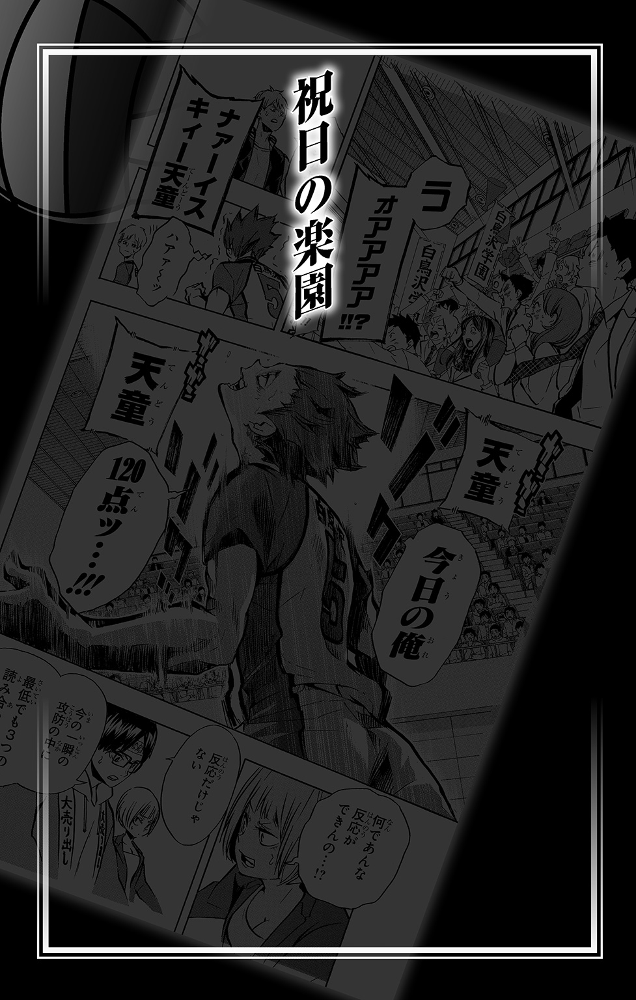
名門・白鳥沢学園高校。県内有数の進学校で、部活動においても文化・体育ともに全国大会出場の常連として名高い。男子バレーボール部も例外ではなく、監督・鷲匠鍛治の指導のもと、高さとパワーを兼ね備えた優秀な人材を集めて全国制覇を目指す、県内最強のチームだ。
王者白鳥沢は、世界ユースメンバーにも名を連ねる全国屈指の大エース・牛島若利をチームの要に、今日も厳しい練習を重ねていた――。
10月、体育の日。空は高く青く晴れ渡っていたが、どんなに外の天気がよかろうとバレー部員たちは体育館にこもって練習だ。開け放った扉から心地よい秋の風が吹きこむなか、部員のひとり、ミドルブロッカーの天童覚は静かに目を閉じていた。
コンセントレーションを高めている......という様子でもない。部員なら皆知っているが、天童は実際にプレーし、相手を叩きのめす快楽で冴えわたっていくタイプだ。さらに言えば、目を閉じているだけならまだしも、饒舌な天童が口まで閉じているのがものめずらしくもあり、大平獅音は思わず声をかけた。
「なにしてるんだ？」
「んー？」
天童は妖怪に似ているともいわれるギョロリと大きな目を開けると、調子よく答える。
「必殺技のイメトレ!!」
「ああ、『流星と書いてシューティング・スター』のやつか」
動じない。突拍子もない答えにあきれることもなく、大平は鷹揚な笑顔を見せて頷いた。
クセの多い部員たちの中でもとくにアクの強い天童の言動に、入部当初こそ驚くこともあったが、もう慣れた。第一、直感とセンスで動く天童は野放しにして好きにやらせておくほうが調子が出てくる選手なのだ。のびのびとさせておくに限る。
「いや、あのさ、こないだサインの練習してたとき、ふりがなのバランス悪いなーって思ったんだよね。『流星』の二文字に十一文字じゃん？ そこに気づく俺の美的センス！ ね？ で、もいっこ新しいの考えようと思ってさ！」
些細なことを気にしていては始まらないと思いつつも、大平はどうしても気になってしまい確かめる。
「サインの、練習」
「うん！ こう、シャシャシャって名前書いて、なんかかっこいい一言添えてさ。俺は必殺技の名前書こうと思って。あれ？ もしかして獅音はサインの練習しないの？」
「しないなあ」
「へえーっ!!」
逆に珍しいものを見るような目で見られてしまったな、と大平が内心苦笑したとき、前にいた五色工の耳がピクリと動くのがわかった。ボールを持つ手にギュッと力の入ったルーキー五色の後ろ姿に、大平は確信する。
工のやつ、今夜、ひとりでサインの練習するんだろうな......。
と、そのとき、再び必殺技のイメトレに励んでいた天童が、パッと目を開けた。
「わかった！ 新しい必殺技は......ビッグバン!!」
白鳥沢が――鷲匠監督が求めているのは、高さとパワーを兼ね備えた圧倒的な力だ。その高い要求に応え続ける限り、多少の逸脱は大目に見られることもある。が、まあ、練習中によけいなことを叫んで許されるわけもない。
「覚ィィッ！ いらんこと言ってるヒマあったら走ってこい！」
「あ、ヤバい」
体育館に鷲匠の怒号が響き、天童が逃げるように外へ出ていった。大平はやれやれと首をすくめて想像する。
ビッグバン、両手両足をパッと開いて跳んでるイメージしか湧かないけど、それだとブロックできないよな。っていうか、どういう漢字を当てるつもりだったのかな......。
体育館の大きな窓の外もすっかり暗くなり、一日の練習が終わる。監督の帰った体育館では、部員たちが幾分リラックスして後片づけを行っていた。レギュラー陣も控えもなく、部員たちの話題は勢い今月末に控えた代表決定戦が中心となる。
「決勝、どことかな」
「番狂わせがない限り、あがってくるのはまた青城だろうな」
目指すは全国制覇のみ。常勝白鳥沢は、どこと当たるか、決勝まで進めるかなどということはもはや問題としない。県大会レベルでの敗退など考えることもなく、ただただチャレンジャーたちを迎え撃つ王者の姿勢を崩さない。
「インターハイ予選じゃ、烏野のおかしな速攻にけっこう押されてたって話でしたけど」
「烏野？ たしか若利が烏野の１年と話したって言って......ん？ 天童、また別の必殺技か？」
いつも誰よりも騒がしい天童が話の輪に入らず、ひとり目を閉じてどこかうっとりとしていた。怪しい。しかし怪しい行動はべつに珍しいことでもない。大平に声をかけられ「ん？」と目を開けた天童は、夢でも見ているかのように笑って言った。
「思い出してた」
「何を」
「んー？」
天童は思わせぶりな目をしたかと思うと、ニッと笑う。
「......どシャット決められたときの及川の顔でした !!」
!!」
そう言ってキャッキャキャッキャと飛び跳ねる天童の顔に、チームメイトたちが冷ややかに一歩引いた。
「ひでえ」
「ゲスい」
しかし天童は気にすることなく、陶酔しきった目で続ける。
「あの悔しそうな目ね！ 性格悪い、負けず嫌いの奴が負けたときの、あの顔がまた見られると思うと......もうたまんないよね！ ね！ ね！」
この数年、県内では白鳥沢と青葉城西が不動のツートップで、白鳥沢の面々はことあるごとに及川率いる青葉城西と戦ってきた。中学時代から六年間通して及川と相対してきた３年生も多く、この先も、バレーボールを続ける限り、つきあっていく相手だろう。チームの誰もが、エース牛島も認める好敵手・及川の顔と華やかなプレーをまざまざと思い描くことができた。
及川と同じくセッターの瀬見英太が、真顔で返す。
「お前も十分性格悪いけどな！」
「ああ、読みが外れたときとか、すごい顔してるな」
大平も頷く。
「えー！」
一瞬ふてくされた天童だったが、すぐにとらえどころのない笑顔に戻った。
「でも俺のほうがかっこいいっしょ？ 及川はテレビサイズだけど、俺ってどっちかっていうとスクリーンで映えるタイプっていうか。ほら、個性派的な立ち位置っていうの？」
いいかげんなことを言いながら取りついてくる天童を、大平は「わかったわかった」とあしらい、瀬見はクルリと背を向けてダイナミックに天童を無視して、部員たちに声をかけた。
「よーし、腹減ったし、さっさと帰るぞー！」
「ハイ！」
「なんか食ってく？」
「もう飯の時間だろ」
空腹を思い出した部員たちが、あわてて片づけを終わらせて部室へ急ぐ。体育館の高い天井にバタバタと足音が反響するなか、天童は後輩の白布を捕まえた。
「やっぱ主役っていうか名脇役的なポジションじゃない？ 俺って。ねえ白布、ちゃんと聞いてるー？」
「あ、はい。そうですね」
白布は無表情のまま適当に受け流したが、天童は言質取ったりとばかりに大平のもとへ跳ねていく。
「ほらー！ 獅音、今のちゃんと聞いたー？」
「わかったわかった、いいから帰るぞ。ほら、若利もう先行ってるし」
「え」
顔を上げると、牛島はひとりさっさと身支度を終えているのだった。
「あ、ほんとだ。ねえ、若利くん待ってよー。おーい、主役ー！」
先を行く牛島がやおら振り向き、天童を真正面から見据える。
「なんだ？」
その顔をまじまじと見て、天童は満足そうに笑った。
「いいね、それ。主役の自負っていうの？」
「.........？」
何を言っているのかわからないが、という牛島の表情に「早く行こ」と声をかけて、天童が外へ出る。
同時に「消しまーす」と１年生の声がして、早朝から点いていた体育館の水銀灯がようやく消えた。
駅や繁華街から遠く離れたのどかな夜道では、秋の虫がにぎやかに騒いでいた。肌を冷やす夜気のなか、揃いのジャージを着たバレー部員たちが固まって帰る。
「じゃ、明日」
「お疲れさまです！」
自宅へ帰る者と寮へ戻る者とが交差点で分かれる。レギュラー陣のほとんどが、学校近くの学生寮で生活していた。通学時間の短縮、理想的な食生活、それらも全国制覇へ繫がるサポートだ。
学生寮へ戻る部員のひとり、天童が横断歩道の途中で「あっ」と立ち止まった。
「なんだ？」
「今日祝日だって！ ジャンプ土曜にもう出てた！ 不覚！」
車道の真ん中でしゃがみこむ天童を「ほらほら、危ないから」と大平が歩道まで引っ張りあげる。
「それ、そんな頭抱えるようなことか？」
「べつに明日でいいだろ」
チームメイトたちの至極当然の言葉に、天童が「アイタタター」とあきれ返った。
「わかってないわ、ふだんだったら月曜日に読めなくても我慢できるけど、三連休のときは土曜に買わなきゃ意味ないでしょ！ 土曜は無理でもせめて休みのうちに読むのが常識だから！」
「え、そうなの？」
「知らないよ」
「天童ルールだろ」
困惑する仲間たちに「俺、コンビニ寄ってから帰るから、俺の分の晩メシ残しといてねー！」と手を振って駆けだそうとした天童だったが、気が変わったのか、ふいに振り返って言った。
「若利君、つきあって」
話し相手がいないとつまらないとでも思ったのだろう。牛島のほうも、どうということなく誘いに乗る。
「ああ、かまわないが」
そして天童と牛島のふたりは、仲間と別れて秋の夜長を歩きだしたのだった。
「若利君さ、柔いプリンと固いプリンどっち好き？」
ぽつりぽつりと街灯のともる夜道に、天童の大きな声が響く。
「......プリン？」
「ほら、プルプルのやつと、ギュッとしたやつあるでしょ？」
「そうか」
「俺、だんぜんプルプルのほうね。あ、俺、小さいころ親にプッチンさせてもらえなくて！ 洗い物が増えるからカップから食べろとか言われてさー。いいじゃんね、皿の一枚くらい減るもんじゃなし」
「プッチン？」
十年以上も前のことで悔しそうにふてくされた天童と、話が見えずに戸惑う牛島の脇を、大型トラックが通り過ぎていく。その風を受けながら天童はなおもプリンの話題を続けた。
「ほら、プリンの底のポッチのとこプッチンするでしょ？ したかったでしょ？ 若利君、してた？ 家の人、させてくれた？」
指でプッチンの所作をしながら畳みかけてくる天童を真似て、牛島が人差し指を曲げてみる。
「............」
「あれさ、折れてもうまく穴開かなかったこととかない？ 俺さ......あ、ロボ！」
プリンの思い出話もそこそこに天童が駆けだす。置き去りにされた牛島はその場でしばし「穴？」と考えていたが、名前を呼ばれて顔を上げた。
「若利君、ロボいる！ ロボいた！ ロボ！」
天童が手を振っているのは、道沿いにある携帯ショップの前だった。牛島は素直に天童のもとへ歩いていったが、ロボットが気になるからというより、ただ単に呼ばれたから行くというだけのように見える。
天童はガラス窓に額をくっつけて中を覗きこんでいた。牛島も中を見てみると、なるほど閉店後の暗い店内に子供のマネキンのような接客ロボットが立っていた。しかし動くでも光るでもなく、立っているというより置かれているというほうが正しい風情だ。
「なんか、うなだれてるね」
「ああ」
「あ、充電中なんだ。あそこ、ほら、コンセント繫がってる」
「そうだな」
「あれ、普通のコンセントでもいいのかなー」
電気の消えた店内でがっくりと頭を垂れているロボットはどこかもの悲しく、練習後の身体にしみいるような、夜風が冷たい。天童は、張りつくように覗いていた窓からそっと離れた。
「動かないロボット見ちゃうとさ、もう地球は滅亡しちゃってて、生き残りは俺らだけみたいな気持ちになんない？」
「いや、ならない」
牛島が短く応え、ふたりの後ろを土ぼこりを巻きあげてトラックが通り過ぎる。しかし天童の目には、トラックもその後ろに続くスクーターももう見えていないようだった。その代わり、にぎやかだった昔を懐かしむように遠くを見やった天童は、ひとつの希望を見つけた。
「あ、なんかあったらあそこ行けば何日か生きられるんじゃない？」
指差したのは、国道沿いに建つショッピングセンターだった。ショッピングセンターは、滅亡後の世界における唯一の明かりのように温かく光っている。
「生き抜く！」
天童はその誘うような光に向かって一目散に駆けだそうとした。かと思うとぴたりと立ち止まり、振り返って声をかける。
「若利くーん、アイス食って帰ろ？」
「ああ」
牛島が静かに歩きだす。飛び跳ねながら歩く天童の背中で、スポーツバッグが上下するのが見える。ロボットの話から先のことはよくわからなかったが、アイスは食べてもいいと牛島は思った。
「ほら若利君、これが、プッチンするやつね」
祝日のショッピングセンター食品売り場は夜でもまだまだ人が多く、カートに山と食料品を積んだ買い物客で賑わっている。滅亡のことなどもうすっかり忘れた天童は、三個入りのプリンを見つけてご機嫌だった。
「皿に載せて、このツメを折るわけ」
牛島はプリンを手に取り、示されたカップの底を見た。
「空気穴か」
ここまでの話をやっと理解する。
このツメを折って空気穴を作り、カップから皿に出して食べるのだろう。しかしなぜ、ひと手間かけてまで皿に出すことにこだわるのか、カップからそのまま食べるのではいけないのか......。
牛島が思案している間にも、天童はプリンの支払いを済ませ、そのままスキップでフードコートのソフトクリーム売り場へ向かっていった。そして、これまで気の向くままに動き回っていた天童が、そこでようやくはたと立ち止まったのだった。
「ずんだ......？ 巨峰......？」
天童の足と思考を止めたのは、地域限定フレーバーのずんだ味と秋限定フレーバーの巨峰味の存在だった。ふたつのフレーバーの間で、天童の心が揺れ動く。
地方限定とか頼むの観光客みたいでかっこ悪いけど美味しそうだし、でもたぶん地方限定はこれからもずっと食べられるけど巨峰は今だけで、でもぶどう味ってそんなに好きくないし......。
他に並ぶ客がいないのをいいことにたっぷり時間をかけて悩んでいた天童だったが、どちらへの思いも振り切れず、ついに助けを求めた。
「若利君、どっちにする？ 一個ずつ頼んでさ......って、もう食べてるし！ よりによってバニラ！ なんでバニラ！」
「ん？」
黙々とソフトクリームを食べながら振り返る牛島に、天童が突っかかる。
「迷うのも味のうち、って言うよね！」
「初めて聞くが」
「だって今、俺が作った格言だもん」
少しも悪びれずにそう言ったかと思うと、天童はカウンターの店員に向き直る。
「あのさ、これ、ずんだと巨峰のミックスにできない？ 機械の中身、ちょっと入れ替えてさ、ずんだ＆巨峰ミックスにしてよ」
真っ正面からいきなりムチャな注文をされた店員は一瞬動揺し、あれ、できるんだっけ......？ とすら思ったが、いやいやできないできないと思い直す。
「すみません、それはできかねます」
「ふーん、じゃあ俺もバニラでいいや」
天童は不満そうに代金を払うと、真っ白いソフトクリームを手にショッピングセンターを出たのだった。ずんだか巨峰か、なんていう思考に陥った時点で負けていた......と自戒しながら――。
ふたりは外に出ると、広い駐車場を望むベンチに腰かけた。ソフトクリームを舐めながら、天童が愚痴る。
「美味いけど、無難なー」
牛島はそれには応えず、食べ終えたソフトクリームの包装紙を丸めて脇のゴミ箱に捨てた。ふたりの前を何台かの車が通り過ぎ、道路へ出ていく。徐行する車の中にいた犬に手を振りながら、天童は訊いた。
「若利君さ、まだ及川がウチに入ったほうが良かったと思ってる？」
「ん？ ああ、及川はうまい」
「そっかー。他に、気になる相手とかいないの？」
「......ヒナタショウヨウ」
聞き覚えのない名前に、天童が身を乗り出して喰いついた。
「誰それ、誰それ、強い？」
「まだわからない」
天童は拍子抜けして「ふーん」と適当に応えたが、隣で険しい表情をしている牛島をジッと見て笑った。
「若利君ってさ、変わってるよね」
「そうか」
「......あ、ヤバい！ 溶けてきた！」
あわてて身を屈め、コーンの下から溶けたアイスをすする天童を尻目に見ながら、牛島は静かに言った。
「瘦せた土地では、立派な実は実らない」
「ん？ なに？ あ、及川？」
口元にアイスをつけたまま訊いた天童はもちろん知らなかったが、牛島の言葉は幼いころ父親に聞かされた言葉に似ていた。自らも白鳥沢で全国制覇を果たした牛島の父親は、幼い牛島にこう伝えたのだった。
――強いチームに入るといい。強くなれる環境には、強い奴や面白い奴が集まる。そして強くなれば、いろんな奴と戦える。強い奴、変な奴、新しい奴。そいつらはきっとお前を強くしてくれる。
白鳥沢は、まさしく肥沃な大地だった。
名将と名高い監督、充実した施設、県内外から集まる多種多様で優秀な人材。県内でこれだけ恵まれた環境は他にないだろう。白鳥沢には強くなるために足りないものがなく、望めば望んだだけのものが得られる。
ただし、それは鷲匠監督の描く強さと合致する限りの話だ。実力がありながら、チームのコンセプトと合わず控えに甘んじる選手もいる。
逆に、天童はここへきてようやく、存分に力を発揮できるようになった。
自分が気持ちよく動けるのは――直感とセンスに頼る自分のやり方が許されているのは、牛島がいて鷲匠がいる今の白鳥沢だからこそと、天童は理解していた。
中学まで天童のやり方は認められなかった。
天童の好むゲスブロックは、読みが外れればディフェンスの穴ともなる。その穴を承知で好きにやらせてくれる監督は多くはないだろう。小さくまとまったチームには、それ相応のやり方があるということだ。
自由を得るには、強くならなくてはいけない。自由に動き回らせてくれるだけの度量を持つ、大きなチームに入らなければならないのだ。
白鳥沢にはレベルが高いからこその自由があり、また同時に自由だからこその歪さがあった。
圧倒的な強さを持つ超高校級プレイヤーの牛島、偏屈ながら理解ある監督。それぞれが他校ならエースを張れるであろうチームメイトたち。その中にあってはじめて、自分のスタイルが許されるのだと天童はわかっていた。
大学バレーでは、きっと今のように自由にプレーさせてはもらえないだろう。ここ白鳥沢での三年間が、ちょっとした奇跡のようなものなのだ――。
天童はソフトクリームを食べ終えると、ぼんやりと座っている隣の大エースを見た。
「若利君が味方でよかったわ」
駐車場を行き来する車のライトがゆっくりと流れ、ベンチに座るふたりを照らしていく。その姿は、普通の高校生が帰り道のショッピングセンターで駄弁っているだけのように見えるだろう。そしてそれはきっと事実でもある。
「だって若利君、心折れないからつまんないし、ドシャれないから気持ちよくないし」
「そうか」
「うん。あ、見て、明日も晴れるね」
見あげた空にはくっきりと明るい月が輝いていた。天童は勢いよく立ちあがってグッと伸びをすると、改めて牛島を見た。
「早く戻って、プッチンしよ」
どんなに天気がよかろうと、屋内のコートには決して日が当たらない。でも十八メートル×九メートルの小さなコート、白鳥沢のチームメイトと立つコートだけが、最高にチョーシに乗れる天童の楽園だった。
「若利君、若利君、俺やっていい？」
他の寮生から少し遅れてとった夕食後の食堂で、天童が顔を上気させて訊く。その手の中には、さっき買ったプリンがあった。
「ああ」
ふだんと変わらぬ調子で頷く牛島はといえば、もうすでに自分のプリンをカップのまま食べはじめている。
「それじゃあ......」
天童はゆっくりとアルミのフタを剝がすと、慎重に皿へプリンを載せた。そしてかけ声とともに底のツメを折る。
「......ていッ！」
ぷるんとプリンが滑り落ちる。ふるふると揺れる艶やかなプリンをうっとりと眺めて、天童が満足げに笑った。
「これでしょ、これ！ これぞプリンのお作法！ それじゃ、いっただっきまーすッ！」
牛島は、黙って一連の作業を見ていた。そして目の前にある、すでに自分が食べ終えた空のカップを確認し、それからもうひとつテーブルに載っている未開封のプリンを確認した。そして口を開く。
「天童」
プリンを食べていた天童が「ん？」と、顔を上げる。
「プリンだが、もうひとつもらっていいだろうか」
「もちろん！」
天童がニッと笑うと、牛島は最後のプリンを手に取った。そして、底のツメを凝視する。
「これを、折る」
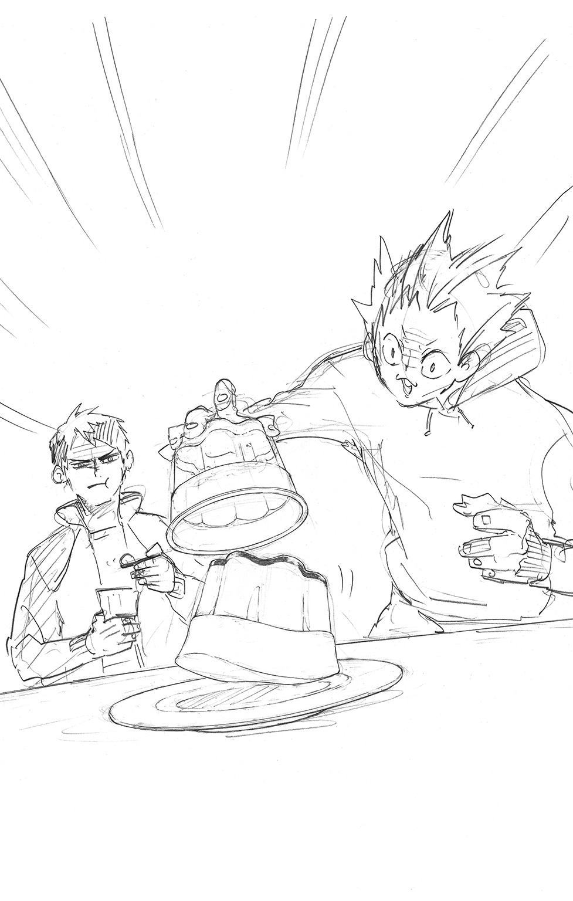
牛島が皿を用意していると食堂の扉が開き、風呂あがりらしい大平が入ってきた。大平はふたりに気づいて「おう」と手を挙げると、冷蔵庫を開けながら訊く。
「遅かったな。なに食ってるんだ？ お、プリンか」
そう言って麦茶を取り出した大平の姿を見て、天童がカッと目を見開いた。
「うわ!!」
「ん、どうした？」
大平が振り返ったときには、天童は机に突っ伏していた。
「ジャンプ忘れた......!! プリンに夢中になって......!!」
嘆く天童の真正面では、ちょうど牛島がプリンのツメを折ったところだった。
ぷるん。
「............」
牛島の眉がピクリと動いた。
THAT'S ABSURD!
- GOLDEN VOLLEYBALL -
♯４「真相を追え」
「ただいまー、イテテテテテ」
玄関に飛びこんできた日向は擦り傷だらけの痛々しい姿だった。出迎えた清水が、あわてて救急箱を取りにいく。
「今日もまた影山にやられたの？」
傷の手当てをしながら訊ねると、日向は憮然として説明をはじめる。
「町で調べ物してたら、急にフハハハハーって出てきて。もう五回目ですよ！ あいつ、おれを見つけたらすぐ爆破しようとするんだもんな。おれは青根さんと違って生身の人間なのに！」
「日向は不死身みたいなものだからいいけど、町の人が心配」
「いや、おれも普通にケガとかしますから！ まあ、とりあえず人の少ないとこに逃げるんで、これまで爆発に巻きこまれた人はいないんですけど」
あっけらかんとした日向の笑顔を見て、清水は心配そうに呟く。
「あの富豪、もしかして黄金のバレーボールを見つけるより、日向を爆殺するほうに興味が移ったんじゃ......」
「そ、それは困ります!!」
ソファから飛びあがった日向が「イテテ」と、膝の擦り傷を押さえた。清水は救急箱を片づけながら、涙目の日向に訊く。
「ところで、なにを調べてたの？」
「あ、そうだ！ おれ、すごい情報手に入れたんです！」
町中のスポーツセンターで高校バレーの大会があったので、集まった選手たちに「黄金のバレーボールって知らない？」と訊ねてみたという。知っているという答えがいくつか得られたのだが、そう答えた者はみな、同じ高校の生徒だったのだ。どうやら黄金のバレーボールは、その学校では有名な都市伝説らしかった。
「あ、知ってる！ 夜、ひとりで歩いてたら『わたしのボール、綺麗？』って、いきなりボール渡してくる女の人の話でしょ？」
「え？ 俺は、夜中に自主練してたら『おまえの落としたボールはこれか』って声がして、どこからともなく金のボールが転がってきた......って、ひとつ上の先輩が言ってたの聞いたけどな」
「へえ、男子と女子で違うんだね」
「体育館も違うし、オバケも棲み分けができてるのかもしれないな」
「澤村って真面目な顔して変なこと言うよね」
「えっ、そうか？」
「――って、高校生が言ってました！」
「それ、学校の怪談だよね」
「はい、他にも『トイレに入ったら輝くボールが詰まってて困った』とか『目を閉じて階段を昇ると十三段目に黄金のバレーボールが出現して危ない』とか、いろんな情報が得られました！」
日向は新事実に目を輝かせていたが、清水のほうは半信半疑だ。
「信じていいのかな......」
「最初の証言をしてくれたのは、男子バレー部と女子バレー部の主将って言ってたから、きっと信用できますよ！ おれ、今夜その学校に行ってみます！」
しかし、清水はあくまで慎重だった。
「もしかして、富豪の罠ってことはない？」
「それは絶対にないです！」
日向はキッパリと断言した。
「あいつバカだから、罠なんて考えつかないに決まってます！」
「まあ確かに、白昼堂々爆破する人だもんね......」
清水が納得したところで、奥のドアが開いた。のそりと大きな影が入ってくる。青根だった。溶鉱炉に落ちて壊れた身体は、すっかり元どおりになって、もう人間と区別がつかない。
「あ、直ったんですね！ さすが清水先輩！」
日向に飛びかかられた青根はよろけることもなく、逆に日向のほうが「イテテ」と傷の痛みに呻いた。
「充電は終わった？」
清水が確かめると青根がゆっくりとうなずく。準備は万全のようだった。
「よーし！ じゃあ、みんなで確かめにいこう！」
日向が待ちきれなそうに飛び出していった。
〈続〉
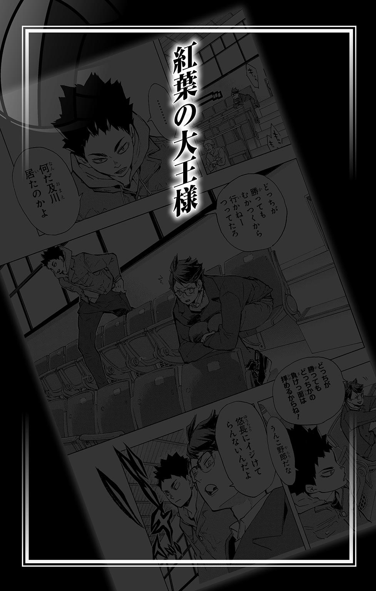
一勝一敗、その一敗が及川徹にとって高校生活最後の公式戦となった。相手チームは烏野高校。今年の春までは、気に留めることもない格下の学校だった。特筆すべき点はただひとつ、この春、中学の後輩が入学したということだけ。それだけの、ありふれた凡百のチームが、この短期間で自分たちを追い落とすまでに成長するだなんて誰が予想しただろう。もちろん及川自身も想像だにしていなかった。６月のインターハイ予選で戦うまでは。
インターハイ予選での一勝は、フルセットの末の辛勝。
そして今日、春の高校バレー宮城県代表決定戦。青葉城西高校は準決勝で烏野高校に敗退した。
一勝一敗、それが対烏野公式戦の記録だ。
自分たちのチームが弱かったとは思わない。強い。この三年間で、全国でも戦えるだけの力をつけてきたという自負もあった。ただ最後のワンプレー、あの瞬間だけ烏野に押されたのだ。そして、それが勝負だ。
「......クソ」
仲間たちと別れて自宅へ帰っても、及川の頭からは最後のプレーが消えなかった。自分が上げたトスから始まり、自分が拾えずに終わったラリーの軌跡がありありと思い出される。風呂に入っても布団にもぐっても何度も繰り返し再生され、眠れない。
エースに託した超ロングセットアップ、その思いに応えるように最高のタイミングで入ってきた岩泉、しかし烏野の主将と坊主頭が繫ぎ、ヒゲのエースが打った。
そのスパイク、渡っちと狂犬ちゃんは本当によく拾った。飛雄のダイレクトに反応した金田一もよくやった。爽やか君も根性だった、最後、飛雄があのチビちゃんに上げることはわかっていた。わかっていて、きちんと三枚ついたウチのブロックは偉かった。
最後、あのとき、チビちゃんがどこに打つかわかった。わかって、でも、ボールは無情にも及川の手を跳ねてコートの外へと消えた。
「拾えた......拾えました......拾えなかったけど......」
及川はブツブツ言いながら布団をはみ出して転がっていく。しかし畳の上をどこまで転がろうとも唸ろうとも、負けた映像は頭に焼きついたように消えず、責めさいなんでくる。冴えきった頭の中で何度も執拗に繰り返される最後のプレーに、走馬灯ってこういう感じだろうかとも思う。
そして転がれば、試合後ヤケ食いのように食べすぎた胃が苦しい。
「う......」
壁にぶつかって止まった及川は、明日の決勝戦を思った。
決勝戦――烏野対白鳥沢だ。
帰りに寄ったラーメン屋で、岩泉に「で、明日、見にいくのか？」と訊かれた及川は答えた。
「行かないよ、どっちが勝ってもムカつくから」
そう答えたものの、やっぱり決勝は気になる。どうせ見にいかなかったらいかなかったで、一日中そのことばかり考えてしまうのはわかっていた。でも、負けた相手とこれまで勝てなかった相手が戦う試合など見たくもない。が、見たい。
いつまでたっても眠りにつけず、ただイライラと寝返りを打ち続ける暗闇で、及川ははっと気づく。
これまでずっと前を行く牛島を追い続け、後ろから来る影山に怯えていた。だが、今はふたりとも自分の前にいるのだと――。
「いや、違うね！」
及川はひとり暗い部屋のなかで叫び、浮かんだ思いを吹き飛ばすように布団を蹴る。
「ちょっと一回試合に負けただけで、飛雄より俺のほうが上だし!!」
と、いつまでもコロコロと転がっていたが、ふと目が覚めて、いつの間にか自分が眠っていたのだと気づく。カーテンの隙間から朝の光が射していた。
及川はぜんぜん寝た気のしない目でぼんやりと天井の木目を眺めながら、夜が明ければ気分も晴れている......なんていうこともないのだなと思う。
決勝戦を見にいくか、どうするか。
今日が平日ならこんなに迷うことはなかったのに、なんの因果か土曜なのが恨めしい。学校がないばっかりに悩むことになってしまう。
「とりあえず、メシ食お......」
及川は重い身体をなんとか起こすと、くしゃくしゃの頭で部屋を出た。
「......行ってきます」
そして朝食の後、及川は結局外へ出たのだった。
歩きだしても、一歩一歩が重い。とにかく行きたくないのだ。無意識のうちに道端の小石など蹴りながら歩いている自分に気づき、いじけてるみたいで嫌だなと思うが実際いじけているのである。今から家へ帰らなくちゃいけない理由を探してみるも見つからず、及川はやってきたバスにしぶしぶ乗った。べつに決勝戦を見にいくわけじゃない、ちょっと出かけるだけだから、と自分に言い聞かせながら駅への道を揺られていく。
バスの中は暖かく、心地よい揺れと相まって眠気が戻ってくる。見慣れた景色が流れる窓の外をぼんやりと眺めながら、つかの間、昨日のことを考えずに過ごした。なにも考えず、ただ暖かなバスの座席に深く身をゆだねているうちに、しかしバスは終点に着いてしまう。
バスを降りた及川は、ひとり途方に暮れた。
土曜の午前中、駅前は人でごった返している。誰もが目的地に向かって歩いており、行く先の決まっていない人間はきっと少ないのだろう。
よるべなく人ごみの中に立った及川は、不本意ながら考える。
もし、もし体育館に行くとして、廊下やトイレなんかで牛島だの影山だのと鉢あわせになるのだけは絶対に避けなくちゃいけない。絶対に。最悪、どうしても行かなくちゃいけないのなら、試合が始まってからだ。
駅を見上げて、壁の時計を確認する。まだ早い。体育館までの所要時間は......と考えて、首を振る。
「あー、やだやだ。なんであいつらの試合なんか見にいかなくちゃいけないのさ......」
行かない、行かないんだからねと呟き、及川はムキになったように駅ビルへ入っていった。本当は行くべき場所があるのだとわかっていながら。
これといった用もなく入ったファッションビルは、カボチャや魔女、ロウソクなどハロウィンの装飾で彩られており、及川は思わず入り口で立ち尽くした。言われてみればもうすぐハロウィンだが、すっかり忘れていた。自分たちがただただ練習していたあいだに、世間から置いていかれた気分だった。
ガラスの中の腕時計を眺め、棚につまれたマフラーを、手袋を、セーターを手にとり、一見ショッピングを楽しんでいるような佇まいでありながら、及川の身体の中ではただただ後悔と反省が渦巻くだけだった。周囲が明るく華やかであればあるほど、気分は自分の内側へ向いていく。目についた眼鏡をかけて鏡をのぞき、ちょっと肩がぶつかった女性に「あ、失礼」と笑顔で謝りつつもなお、心はここにはない。
あのとき、あのプレーが、いや、違う、最後のボールが......と思い返しては、首を絞められたように息がつまり、苦しさに身体が震える。
膝を軽く擦りむいただけでも、くちびるがひび割れただけでも身体を巡る血が流れ出るように、ほんの少しの衝撃でも詰まった後悔が吹き出て叫びだしそうだった。
ただ気を紛らわせるためだけに並んだ眼鏡を順番にかけていると、隣で「逃げちゃダメだって！」と声がした。及川は思わず振り返る。隣では、及川と同じくらいの年頃の女子ふたりが、マフラーや帽子を見つつ真面目な顔で話していた。
「でも、ハロウィンにプレゼントとかなくない？ クリスマスまで待ったほうがよくない？」
逃げちゃダメだと言われた女子が売り物のマフラーをもてあそびながら訊くと、連れの女子は叱るように言いきる。
「クリスマスになったら、バレンタインまでって言って逃げるでしょ！」
「それはそうかもしれないけど......でも断られたらさ......」
「そしたら別の人、探しなよ」
「えー、やだー」
煮えきらない彼女に、一方の女子はあくまでも厳しい。
「じゃあクリスマスにもっかい告りなよ」
「しつこいと嫌われるって！ チャンスは一回っきりだから、慎重にさー」
そのふわふわとした会話を聞いて、女の子も大変だなーと思い、そして一回負けたらそこまでなのはバレーも同じだな、と思う。
でも。
でも、俺はこれで終わりじゃない。
昨日の青城で、昨日の烏野にリベンジを果たすことはできないけれど、でもいつかまた、絶対にぶっ潰す。飛雄を、あのチビちゃんを――。
高校時代の部活が終わったというだけで、ここが道の終わりではない。みんなそれぞれ、まだまだ続く長い道の途上にいるのだから。
「......見てろよ。ここから、次の幕だからな」
及川はようやく顔を上げ、鏡の中の自分を睨んだ。
寝不足によどんだ顔のなかで、目だけが餓えたように光っている。その目に誓うように、心に刻む。
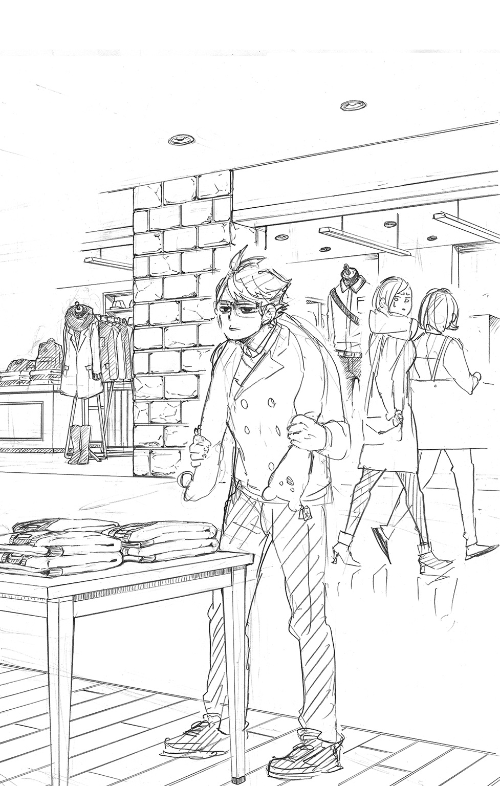
この敗北が再スタートだ。もう、負けない。絶対に負けない。
そして決める。あいつらの試合を見届けに行こうと――。
「ありがとう！」
思わず隣の女子たちに礼を言い、「えっ、なに？」「だれ？」と訝しがられる。
「あ......いや......その......」
あわてた及川は咄嗟に持っていた眼鏡を掲げて、彼女たちの奥にいた店員に声をかけたのだった。
「あの！ この眼鏡ください！」
「はい、新しいのお出ししますね」
笑顔でバックヤードへ向かう店員の頭で、ハロウィン仕様の帽子が揺れる。その大きな魔女の帽子を見送ると、及川は女子たちに言い訳をしながらレジへ向かった。
「えーと、ごめんね。店員さんかと思って、ほら、キミたち可愛いかったから、ね、じゃあネ」
「はあ......」
まだ不審そうな女の子たちから離れると、及川はそっと財布の中身を確かめた。
「お金あるかな。昨日、ラーメン替え玉まで食べたからな......」
勢い余ってうっかり散財した後、及川はついに仙台市体育館へやってきた。何度も何度も訪れている場所だが、出場も応援もしないのに来たことはあっただろうか。及川は急な階段を昇って観客席の一番後ろに座ると、白鳥沢側の観客席を埋めるいかにも強豪校といった大応援団を見て薄笑いを浮かべた。
「どうせ、また勝つに決まってると思ってるんだろうけど。......烏野は、強いよ」
そしてようやくコートを見下ろす。決勝戦――烏野対白鳥沢は、すでに始まっていた。
見るからに高さの違う烏野がなんとか食らいついているという状況は、傍目には同情や哀れみを誘うかもしれない。だが烏野はただがむしゃらなだけではない。それだけのチームがここまで勝ち上がってこられるわけはないのだ。小さく、穴も多いチームだからこそ、烏野は頭を使って壁を乗り越えてきた。突拍子もない、誰も真似できないやり方で。
しかし、一方の白鳥沢は、そんな必死の戦術も否応なくねじ伏せるだけの圧倒的な力を持っている。
今もまた牛島のスパイクが決まり、歓声が起こった。
及川はその何度も見せつけられた力を冷ややかに見下ろす。
「フン......」
見れば、嫌でもインターハイ予選を思い出す。決勝で白鳥沢に負けた試合だ。負けた試合ばかり思い出してまったく碌でもない気分だが、今年こそ絶対に、あの大きすぎる目の上のこぶをこの手で捻り潰してやろうと思っていたのだ。今年こそ、それができると思っていた。それなのになぜ、あそこに立っているのが自分じゃないんだろう――。
そして疎外感を振り払うように自嘲する。
「ま、負けたからだけどさ」
及川は自分の手を見た。長い長い年月、練習を重ねてきた手だ。その手をグッと握りしめ、試合に目を戻す。
「あ、あの１年のストレートむかつくわー」
「あのゲス、今日も調子いいな、クソ......。眼鏡君もよくついていってるけど」
「烏野のジャンプフローターなー」
「ウシワカ......えげつないね......」
どちらを応援するでもなく試合を追ううち、及川はもう自分の身を振り返ることはなくなっていた。白く大きな鷲と生き残りをかけて挑むカラスの群れ――目の前で繰り広げられている、誰よりもよく知っている二校の戦いを、ただじっと観察するだけだった。
第１セットを白鳥沢が取り、第２セット。デュースが続き、得点が30点台に乗ったときだった。
体育館の空気が止まる。
「......どシャット」
牛島のスパイクが、初めて止められたのだ。烏野の眼鏡だ。ついに牛島を止め、第２セットを奪取した烏野コートが沸く。
狭い椅子に身をかがめていた及川が肩をすくめた。
「白鳥沢のセッター、焦ったね」
そして、深く息をつく。
春に行われた烏野との練習試合――。あの日、及川のサーブに狙われていた頼りない１年生が、いまや牛島のスパイクを止めるまでに成長していた。あれからまだ半年もたっていない。そら恐ろしいような成長だった。ブロッカーひとりの話ではない、烏野というチームの行く末が恐ろしく、また楽しみでもあった。
そして試合は一進一退、ついにファイナルセットを迎えたとき背後から名前を呼ばれた。
「なんだ、及川いたのかよ」
一瞬、バレた！ とあわてたが振り返るまでもない。岩泉の声だ。
「どっちが勝ってもむかつくから行かねーつってたろ」
そう言って隣に座る岩泉へ、及川は試合から目を離さずにうそぶく。
「どっちが勝ってもどっちかの負けっ面は拝めるからね！」
「うんこ野郎だな」
「悠長にイジけてらんないんだよ」
そう言って、コートの烏野を示した。
ひとりひとりの力では決して敵わないであろう荒削りなカラスが、群れを成すとなぜこんなにも強くなるのか。そして、なぜこの短期間でここまでの成長を遂げることができたのか。男子三日会わざれば刮目して見よとは言うが、今日の烏野はすでに昨日とも違うチームになっている。
今、この試合中にすら成長している烏野を見て、及川は、短期間で進化を遂げる異形の怪物を見るような気がした。彼らはこれからも出会った相手を喰らい、それを糧として大きくなっていくのだろう。
――ひとりだけうまくたって勝てないんだよ、ドンマイ！
春、烏野との練習試合の後、後輩だった影山にそう言ってやろうと思っていた。あのころは、１年生ふたりの変人速攻だけが武器のちぐはぐなチームだった。セッターにボールが繫がらなければ、それだけで崩れるような脆いチームだったのだ。
その烏野が、今、いみじくもチームの連携という集団の力で、圧倒的な個の力に立ち向かっていた。ひとりの力では決して敵わない相手に、塊でぶつかっていくようにして互角の戦いを見せる。
そして今日、その集団という戦略に智略がついてきた。張り巡らされたカラスの狡猾な罠が、王者の牙城を削っていく――。
ホイッスルが鳴り、試合が終わった。セットカウント３―２、勝者烏野高校。
常勝の王者、白鳥沢の敗退という番狂わせに歓声が噴き上がるなか、及川と岩泉は静かに席を立った。
「さっさと帰んべ」
緊張に身を切られるようだった体育館を一歩出ると、ひらけた青空に紅葉が美しい、ゆったりとした秋の景色が待っていた。木の葉の揺れさざめく乾いた音と、遠くから小さく「バックします」とトラックかなにかからの合成音が聞こえるだけで、とても静かだ。歓声、どよめき、ブラスバンドの音楽に合わせて叩かれるメガホンの音、そして応援歌が渦となっていた体育館の熱気が噓のようだった。
広くのどかな道を足早に歩いていく及川へ、岩泉が声をかける。
「おい、うんこ野郎」
「さっきから、うんこ野郎、うんこ野郎ってうるさい......」
及川はムスッとして振り返ったが、岩泉はその不満には応えない。その代わり、決勝戦を思い出すように言った。
「イジけてる場合じゃなかったな」
及川もふくれるのを止め、小さく頷く。
もう、彼らふたりが烏野と戦うことはない。だが、後輩たちはこれからも烏野と対峙し続けるだろう。二度と烏野に負けないため、後輩に伝えられること、そして烏野から学べることがあるはずだった。
が、そんなことは言わず、及川はうつむいてなにか考えていた。
「じゃなかったな？ な、な......、な......」
「なんだよ」
岩泉が訊くと、及川はポンと手を叩いて顔を上げた。
「あ、泣き虫エース！」
「あァ？ なんだよそれ」
バカにされたと思った岩泉が凄むも、及川は機嫌よさそうに繰り返すだけだ。
「スだよ、岩ちゃん、ス！」
「だから、なにがだよ！」
イライラして怒鳴ると、及川はにっこりと笑う。
「だーかーら、しりとりだってば！」
岩泉はなんだそれとあきれた顔をすると「やらねえ」と短く言い捨てて、及川を追い抜いていく。その後ろ姿を追いかけながら、及川が煽る。
「ス！ 岩ちゃーん、スだよ。もしかして思いつかないとか？ ス！」
「スースースースーうるせえよ！」
そう言いながらも岩泉はまんまと術中にはまり、考える。
「ス......、ス......、あ、ストレートがすげー変な前髪の奴」
歩道の縁石を歩きながら、及川が吹き出した。
「なにそれ、文章じゃない。まあいいけどさ。つ、つ......次は勝つ！」
「次は負けねえ」
岩泉が即答すると、及川は縁石から跳び下りて独り言のように言った。
「次はさ......、どこで、誰と、誰を相手に試合するのかな」
「あ？」
振り返ると、及川は秋の空を見上げていた。目に入ったその顔は、決勝戦を見ていたときと比べてどこかすっきりとして見える。終わったことを胸に抱き、決して忘れず、しかしそれに囚われることなく先を見る者の顔だ。岩泉は前に向き直って「さあな」と呟くと、笑いもせずに言った。
「つうか、しりとりやってんじゃなかったのかよ、クソ及川」
「あ......！」
「お前の負けな」
そう言って、再び足早に歩きだす。
「えー、今のなし、もっかい！ ねえ岩ちゃん、もっかい！」
「しつこい」
「もー、そんな頑固だから女の子にモテないんだよ？」
「うるせえッ！」
岩泉が放った振り向きざまの頭突きをかわし、及川はニヤリと笑った。
「フッ、いつまでも同じ攻撃を喰らい続ける及川さんでは......イテ！ ちょっとローキックやめて！ 地味に痛い！」
「フン」
秋の青く高い空の下、岩泉がどんどん先を行く。及川はスネを押さえつつ、顔を上げた。
小学校の頃から、人生の半分近くずっと一緒にバレーをしてきた仲間。その見慣れた後ろ姿は、力強く、頼もしい、エースの背中だ。敵になるか味方になるかはわからないが、この先も、ともにバレーをし続ける仲間であり続けるだろう。
牛島や影山も同じことだ。いつかぶっ潰してやりたいから絶対同じチームにはなりたくないが、これからもずっと、何度でも戦い続ける相手となるだろう。
ぜんぜん、まだまだここからだ。やっぱりこれで終わったわけじゃない。終わらせてたまるか。
「......エンドレス！」
背後からの大きな声に、岩泉が「は？」と足を止める。
「ほら、さっき、『え』で終わったでしょ？ 『次は負けねえ』の『え』ね」
挑むような及川の目だったが、岩泉は素気なく返すだけだ。
「もうしりとりは終わったっつーの、おまえの負け」
「えー！ 岩ちゃん冷たくない!? ス、もっかいスだよ、岩ちゃん」
「だから、さっきお前負けただろ！ 負けたら終わりだっつーの！」
シッ、シッと追い払ってくる岩泉の隣で、及川が叫ぶ。
「終わんない！ エンドレス！」
「なんだよそれ！」
「ス！」
食い下がってくる及川をチラリと見て、岩泉はめんどくさそうに話題を変えた。
「うるせえ、負けたんだからラーメンおごれ」
「えっ、まさかの連日ラーメン!?」
「うるせえよ、っていうか、その眼鏡むかつく。変装のつもりか？」
岩泉が指差すと、及川はムキになって言い返す。
「違う！ お洒落！ ファッション！」
「ふん、どうだか」
「そこは信じて！」
同じ道を行く限り、阿吽の呼吸と言われたふたりの関係はきっといつまでも変わらない。荷物もなく、私服で、いつもと様子は違えど、ふたりは毎日の部活帰りと同じように秋の道を並んで歩いていった。
THAT'S ABSURD!
- GOLDEN VOLLEYBALL -
♯５「第二体育館」
「......カラスノ高校、ここだ」
黒装束に身を包んだ三人組が、夜の闇にまぎれて学校に忍びこむ。目指すは男子バレー部が使用している第二体育館。夜中に自主練をしていたら黄金のバレーボールが出てくる、という噂を検証しに行くのだ。
「こっちが第二体育館みたいです」
清水が髪からヘアピンを抜き、体育館の鍵を開ける。重い扉を開けると、そこに現れたのはなんの変哲もない普通の体育館だった。幻の品が隠されているような雰囲気も、幽霊が出てきそうなおどろおどろしさもない。ちょっとがっかりした三人が、顔を見あわせた。
「じゃあとりあえず......バレーする？」
噂とはいえ、黄金のバレーボールが出てくるのは夜中の自主練習中らしいのだ。三人はまず、バレーの練習を始めることにした。
「やっぱり用具室のカゴには普通のボールしか......」
用具室からボールを持ってきた日向が、ただならぬ視線を感じて顔をあげる。
「.........!?」
目の前で、青根が日向を指差していた。ロックオンだ。青根の目に静かに燃えている闘志に気づき、日向も思わず武者震いする。
「あ、青根さん......。おれも、負けません!!」
向きあって睨みあうふたりの間に火花が散ったが、その脇から清水が冷静に訊いた。
「ふたりでなんの勝負をするつもり」
大きいのと小さいのが、向きあったまま黙りこむ。
「とりあえず、トスしよう」
清水の平和な提案に従い、三人は輪になったのだった。
「はい、日向」
「ウス！ 次、青根さーん」
ボコッという音とともに、日向が不格好ながらオーバーハンドトスを上げる。そのボールを受けようとした青根の前に、突如、黒いマントをまとった人影が飛び出してきた。
「このヘタクソが!!」
謎の人物は、失礼なセリフとともに青根のボールを奪ってトスを上げる。体育館の宙空に描かれた美しい弧を、日向と青根の目が追う。ボールはそのまま、立ち尽くす清水の両手にポンッと納まった。完璧な軌道だ。日向が叫ぶ。
「だ、誰だ!?」
バサリとマントを脱いだ下から、真っ白なスーツが現れた。
「フハハハハハハ、俺に決まっているだろう！」
「か、影山!!」
富豪・影山氏が日向を見下ろして吐き捨てる。
「お前、トス下手だな」
「う、うるせー！ おまえ、金にもの言わせていろいろ雇ってんだろ？ なんで自分で学校に忍びこんでるんだよ!! やっぱりおまえの罠だったのか!?」
「罠？ そんなことするわけないだろう。自分で来たのは......結局信じられるのは自分だけだからだ！」
「おまえ、寂しい奴なんだなあ......」
「同情するな！ お前こそ......ん、なんだ？」
言いあうふたりの足下に、ひとつのボールがコロコロと転がってきた。そのボールは金色に輝いている。
「あ......」
「本当に出てくるとは！」
影山が黄金のバレーボールを素早く奪い、天井へ掲げる。
「フハハハハッハ、これで願いが叶う!! 俺を......世界の王にしてくれ!!」
が、とくになにも起きない。
「あ、あれ？」
富豪・影山氏が小首をかしげ、確かめるように黄金のバレーボールを見あげる。その姿を見て、日向が吹き出した。
「......プッ」
「笑うな!! クソ......黄金のバレーボールよ、ここに溶鉱炉を作れ!!」
「おい、やめろよ！ 本当に出てきたらどうするんだよ、また青根さんが落ちるだろ！ 危ないから、そのボールよこせ！」
ふたりがボールを奪いあっていると、どこからか沈んだ声が聞こえてきた。
「......まだ、願いは叶わないよ」
「え？」
日向たち、そして影山が声の出所を探してキョロキョロと体育館を見回す。
「ここからが本番だからね」
そう言ってどこからともなく現れたのは、金髪の少年だった。
〈続〉
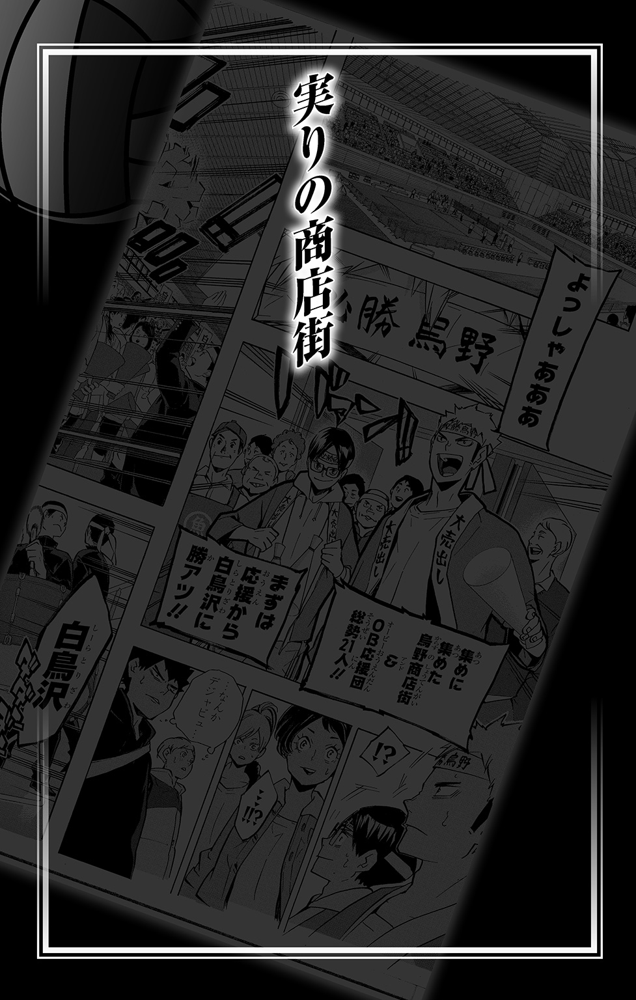
後輩たちの準決勝を見届けたあとのことだった。あわてて店に戻り、残した雑務をなんとかこなした嶋田は、煙草を片手に裏口へ出ると、椅子代わりのビールケースに腰をおろした。10月末、夜ともなるといつものエプロン姿では寒く、羽織るものが欲しかった。
嶋田はジーンズのポケットからライターを取り出すと、煙草に火をつけた。ようやくひと息つき、ポケットからスマホを取り出してなにやら操作する。煙草の火と自動販売機だけが光る暗闇のなか、嶋田は「あ、俺だけど」と話しだした。
「......うん、そうそう、明日の昼前。決勝だからみんなで応援にさ......え？ なんで？ バイトでもあるの？ はぁ、デート!? ちょっと森くん、なに言ってんのー？ 彼女と後輩どっちが大事なんだよー......ああ、うん、そりゃあ確かに君の後輩ではないけど、ないけどさー、ないけどだよ!?」
電話の相手は烏野町内会チーム唯一の大学生メンバー、森のようだった。
「明日が正念場なんだからさー......え？ お前の正念場なんて知らないよ！ そんなんだったら、連日仕事休んで応援行ってる俺のほうが正念場だよ！ 最近、パートさんたちの視線が痛いよ！ あーもういい、いいわ。......あ、でも、来れたら来てよ、彼女も一緒にさ、それじゃね」
電話を切ると、嶋田はすっかり灰の伸びた煙草に気がついた。小さくため息をつき、火を消して立ちあがろうとするとミシッと腰が鳴る。
「痛て......」
おっさんだおっさんだ言ってるうちに、本当におっさんになってきたな......と腰をさすっていると、商店街のおじさんたちの顔が頭に浮かんできた。そして気づく。
「......あ、そうだ。明日、人数分のハッピ用意しなきゃな」
嶋田はエプロンを外すと、明日の相談をするべく滝ノ上の待つ居酒屋へ急いだ。
「どもー」
「おう、嶋っち、悪いけど先にやらせてもらってたわ」
居酒屋おすわりの小上がりでは、滝ノ上がビールのジョッキを掲げてすっかりご機嫌だった。いったい何杯目なのかはわからないが、ジョッキが進むのも機嫌がよくなるのもしかたがない。なんといっても後輩たちの決勝進出なのだ。こんなにめでたいことはない。
嶋田はメニューも見ずに「生ひとつ」と注文し、挨拶もそこそこに本題をきりだした。
「明日、応援に来てくれる人増えた？」
「大野屋さんたちは来れるって言ってたわ」
「そっか。できるだけ大人数で応援できるといいんだけどな、なにせ相手は白鳥沢だし」
「そうなんだよなぁ......」
滝ノ上は高校時代の試合を思い出すように唸る。応援席のみならず通路まで埋め尽くすブラスバンド、応援団、チアリーダー、そしてたくさんの部員たち――強豪校ともなれば応援も威圧的だ。対して烏野の応援団は、どちらかというとまばらだった。気持ちでは決して負けるつもりはないが、残念ながら声で押し負けてしまう。なんとかして人数を集めたいところだった。
「ほら、これとかさ」
嶋田は居酒屋の店内に張られているポスターを指差した。商店街主催のハロウィンイベントの告知だ。
――ご来店のお子様にはお菓子をプレゼント。五百円お買いあげごとに、福引き補助券プレゼント。補助券十枚で福引き一回、特賞は温泉旅館宿泊券。
福引きも温泉もハロウィンとはまったく関係ない気もしないではないが、まあ父親たちの世代は、お祭りといえばガラガラポンという気分からなかなか抜けられないのだった。
「お客さんにも『明日応援に来てくれる人には、特別にハロウィンの福引き券つけます！』って言っちゃえばよかったかな」
ふたりはカボチャの絵が描かれたポスターを見あげた。滝ノ上が真剣な顔をして言う。
「ついでに内沢クリーニングの割引券もつけてな」
「勝手に？」
「勝手に。俺の手書きで」
嶋田は「母の日の肩たたき券かよ」と笑うと、やっとやってきたジョッキを「どうも」と受けとってぐびりぐびりと飲み、ぷはっと息をつく。
「死ぬまで有効、って書いてあるんだろ？」
「もちろん」
ふたりが笑っていると、隣のテーブルにいた、同じく近所の常連さんが赤い顔をして声をかけてくる。
「おう、どうした？ ずいぶん楽しそうじゃないの、おじさんもまぜてよ」
「あ、どうも。いや、母校のバレー部が全国大会に出られるかもしれないんですよ。明日の決勝で決まるんです。一緒に応援行きませんか？ 仙台市体育館なんですけど」
滝ノ上が誘うと、おじさんは微妙にろれつの回っていない口調で驚いた。
「なんだ！ ゆうちゃん、まだ高校生だったかぁ!?」
「え、俺？ いや......だから俺じゃなくて俺の母校ですよ。俺はもうおっさんですから。ほら、坂ノ下のところの繫心が今、監督やってて」
「ああ、そうか、そうか！ いや、憶えてる憶えてる、あの万年補欠だってふてくされてた繫心ちゃんがやっと選手になれたのか！ そりゃあきっと頑張ったんだろうなあ......。おじさんまで嬉しくなってきたよ......あとはそれこそ結婚だけだなあ......！」
酔っぱらっているだけで悪い人ではないのだろう、本当に涙ぐんでいるおじさんを滝ノ上がなだめる。
「いや、泣かないでくださいよ。だから、繫心が出るわけじゃなくて......ま、いっか。すいませーん、生もうひとつ！」
諦めが早いが、滝ノ上も酔っているのである。カウンターに声をかけた滝ノ上に続いて、いつの間に飲み干したのか嶋田も「もうひとつお願いしまーす！」と空のジョッキを掲げる。そして煙草に火をつけると、しみじみと呟いた。
「全国に行くなんてことになったら、もっともっと町を挙げて応援しないとな。全部の店に募金箱置いてもらって、ツアーバスも組んで応援に行って......」
「そのためにも、まず明日の応援！」
「そうだな！」
町を挙げての応援、それは四年前に一度だけ見た景色だった。小さな巨人が活躍したあの年、町中が全国大会へ出場した烏野高校バレー部を応援したものだった。商店街にのぼりが、横断幕がはためき、もちろん電器店では試合の中継を流した。もし明日の決勝に勝てば、そのとき以来の盛りあがりになるだろう。いや、ＯＢの自分たちが盛りあげるのだ。
ふたりはやってきたジョッキを掲げると、やっと乾杯する。
「じゃ、明日の勝利に！」
「乾杯！」
と、テーブルに置いてあった嶋田のスマホが震えた。
「ん......あ、内沢さんだ」
嶋田は届いたメッセージを読むと、ニッと笑って滝ノ上を見る。
「明日。内沢さんも来れるって！」
「よっしゃー！」
思わず立ちあがった滝ノ上の声が、店の外まで響く。大きな赤提灯の揺れる居酒屋おすわりの前、自転車に乗った塾帰りの小学生が驚いた顔で振り返り、そしてそのまま通り過ぎていった。
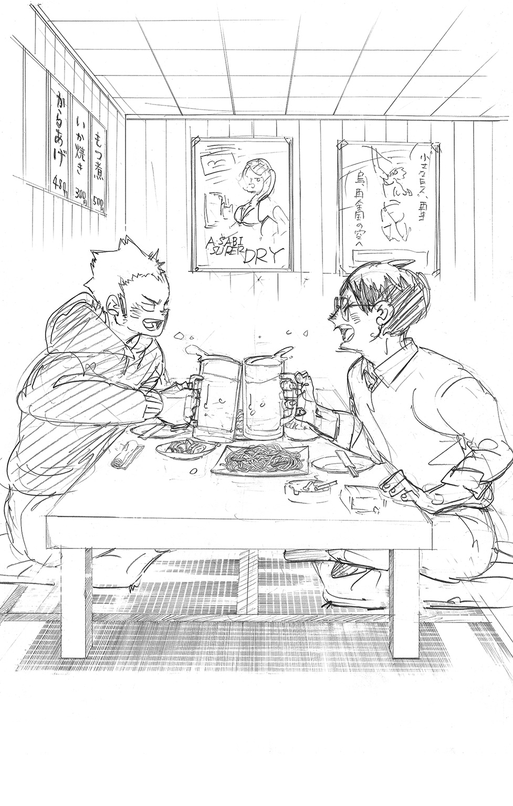
THAT'S ABSURD!
- GOLDEN VOLLEYBALL -
♯６「金髪の少年」
新たな侵入者の登場に、日向たち黒装束の三人組が身がまえる。これまでどこに隠していたのか、三人とも武器を手にしている。
富豪・影山氏は黄金のバレーボールを背中に隠して訊いた。
「なんだ、お前は」
「願いは、それを解かなきゃ叶わない」
「解く？」
日向が訊くと、金髪の少年は小さくうなずいた。
「パズルだよ」
「......パズル？」
まだ金髪の言うことを理解できない四人が、いったいどういうことかと輝くボールを見つめた。
「ボール出して」
少年に促され、影山は隠していたボールを素直に差し出した。
「こうするんだ」
そう言って少年が手をかざすと、ボールの縫い目のある部分からパッと光が放たれた。
「うわ！」
そして全員が見ている前で、ボールは十八個のパーツに分かれたのだった。どうやら寄木細工のように組みあわされ、ボールの形を成していたようだった。黄金のバレーボールは、確かに彼が作ったパズルらしい。
「これを元の形に戻すんだ。道具は使わないこと。あと、パーツを変形させるのもダメ」
「あのさ、なんでこんな物作ったんだよ」
思わず日向が訊くと、金髪の少年はつまらなそうに答えた。
「ヒマだったから」
「は？」
「ヒマだったから作って、せっかくだから誰かに解いてもらおうと思って、適当にネットとかに噂流して......。そしたらあんたらが引っかかったから......。バカっぽいのばっかりで心配だったけど、意外とすぐここまで来たね」
「バカってなんだよそれ！ このボールのせいで、おれすっごい爆破とかされたんだからな！ 青根さんとか溶鉱炉に落ちたし！」
日向が文句を言うが、少年は「ふうん」と興味なさそうだ。そして、富豪・影山氏はハッと気づいて少年に喰ってかかる。
「おい、お前。パズルが解けたら、俺を世界の王にできるのか!?」
「安心してよ、バカに解けるパズルじゃないから」
「......なッ！」
少年につかみかかろうとした富豪・影山氏に、「とりあえず、解くぞ！」と日向が声をかけた。
「おう！」
さっきまでいがみあっていた日向と影山がにわかに団結し、床にしゃがみこんでああだこうだとパズルを解きにかかった。
「こう、スライドさせてさ」
「あ？ こっちだろ」
「おい影山、力まかせにやるなって！」
「うるせー！」
パーツが黄金だということをすっかり忘れているのか、ふたりともパズルをずいぶん雑に扱っている。なにかあるたびにギャアギャアと言いあって騒がしいが、案外和気あいあいと楽しんでいるようにも見えるふたりを眺めて、清水が呟いた。
「......この間に、影山の屋敷に忍びこんでこようかな」
この場から抜け出そうとする清水に、金髪の少年が目ざとく声をかけた。
「待って」
そして、青根の腕をつかんで訊く。
「これ、ロボットだよね。ＯＳはなに？ 分解してみてもいい？」
さっきまでの、なにごとにも無感動だった表情とはうって変わって、少年の目は爛々と輝いている。黄金のバレーボールが分解されたところを思い出して、青根がブルンブルンと首を振る。あんなふうにバラバラにされたら、たまったものではない。
「溶鉱炉に落ちても平気だったんでしょ？ すごいよね」
ずんずん距離を詰めてくる少年に怯えて、青根は助けを求めるように清水を見た。清水は真っすぐに青根を見据えると、はっきり言った。
「大丈夫、壊れても直せる」
そして清水は風のように体育館から出ていった。日向は同じ場所にはいるが、影山と言い争いながらパズルに夢中で仲間の危機に気づいてはいない。青根のもとに、ポケットからドライバーを取り出した少年が近づいていく。
「!!!」
青根の声にならない悲鳴に気づく者はなかった。
〈第二部・逆襲のアオネへ続く？〉
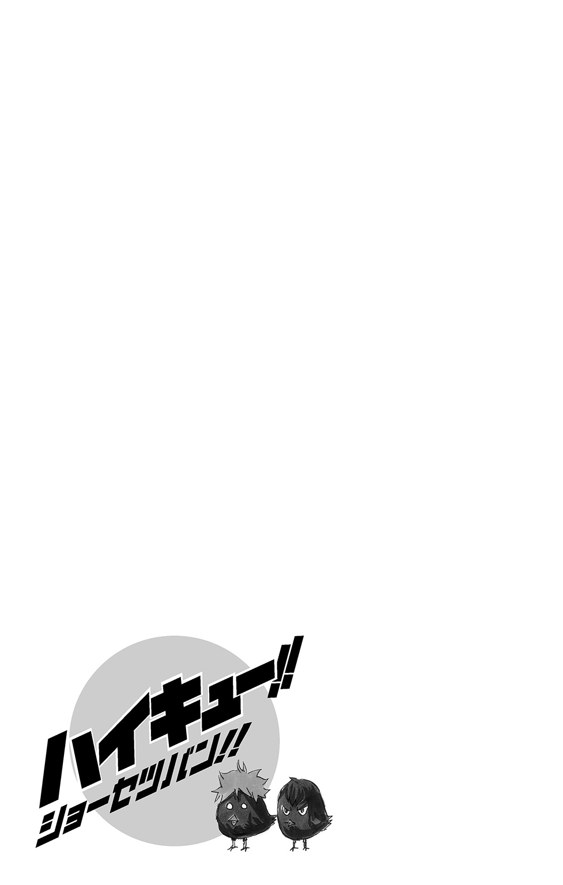
■初出
ハイキュー!! ショーセツバン!! Ⅶ 決戦の秋 書き下ろし
古舘春一
『ショーセツバン!!』はいつも内容盛りだくさんなのでカバーのイラストを何にするか非常～に迷います。
贅沢な悩みです。
星希代子
ＴＶアニメ３期がスタートですね。
今回の『ショーセツバン!!』は、その白鳥沢戦のちょっと手前のお話です。
ジャンプジェイブックスDIGITAL
ハイキュー!! ショーセツバン!! Ⅶ 決戦の秋
著者 古舘春一／星希代子
© 2016 H.FURUDATE / K.HOSHI
２０１６年11月30日発行
この電子書籍は、ジャンプジェイブックス「ハイキュー!! ショーセツバン!! Ⅶ 決戦の秋」
２０１６年10月９日発行の第１刷を底本としています。
装丁 勝亦一己
編集協力 佐藤裕介［STICK-OUT］
編集人 浅田貴典
発行者 鈴木晴彦
発行所 株式会社 集英社
〒１０１－８０５０
東京都千代田区一ツ橋２丁目５番10号
０３－３２３０－６０８０（読者係）
制作所 株式会社ＩＣＥ
本作品の全部また一部を無断で複製、転載、改竄、インターネット上に掲載すること、および有償無償に関わらず、本データを第三者に譲渡することを禁じます。なお個人利用の目的であっても、コピーガードを解除しての複製は、法律で禁じられています。